MÁY TẠO NHỊP TIM TRÊN ĐIỆN TÂM ĐỒ
Bài 1. Máy tạo nhịp tim và điện sinh lý học
Điện sinh lý học máy tạo nhịp tim
Xung điện và cơ tim
- Trong điều kiện sinh lý, các xung điện được phát ra trong hệ thống dẫn truyền (nút xoang – SA node)
- Các xung từ hệ thống dẫn truyền kích thích cơ tim hoạt động (working myocardium) (gây ra thì tâm thu)
- Dòng điện là dòng chảy của các electron qua một mạch điện
- Các electron di chuyển từ anode (-) (điện cực âm) đến cathode (+) (điện cực dương)
- Chiều của dòng điện được vẽ ngược lại trên các sơ đồ! (từ cathode đến anode)
- Ampe là đơn vị của dòng điện
- Nó biểu thị có bao nhiêu electron đi qua một vật dẫn trong 1 giây
- Vôn là đơn vị của hiệu điện thế
- Vôn là lực "đẩy" các electron
- Ôm là đơn vị của điện trở
- Nó biểu thị mức độ "khó" để electron đi qua một vật dẫn
- Điện cực máy tạo nhịp (pacemaker – PCM) có điện trở thấp, cơ tim có điện trở cao
- Nó biểu thị mức độ "khó" để electron đi qua một vật dẫn
- Các electron di chuyển từ anode (-) (điện cực âm) đến cathode (+) (điện cực dương)
- Nếu dòng điện đi qua cơ tim (các electron)
- Cơ tim bị kích thích (khử cực) và xảy ra thì tâm thu
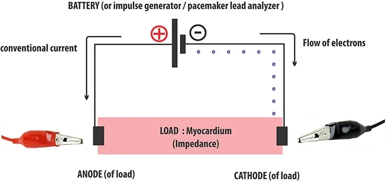
Dòng điện, máy tạo nhịp và cơ tim
- Hình cho thấy một mạch điện đơn giản có pin nối với 2 điện cực trên một phần cơ tim
- Các electron di chuyển từ anode (-) đến cathode (+) của pin
- Tuy nhiên, chiều của dòng điện được vẽ ngược lại trên các sơ đồ! (từ cathode đến anode)
- Anode (-) là phần của mạch điện nơi các electron đi ra
- Cathode (+) là phần của mạch điện nơi các electron đi tới
- Anode và cathode trong mạch điện là những khái niệm tương đối
- Cathode của pin khác với cathode của máy tạo nhịp (điện cực nối với cơ tim)
- Anode và cathode trong mạch điện là những khái niệm tương đối
- Cần nhớ:
- Máy tạo nhịp (PCM) có một pin phát electron từng đợt qua các điện cực tới cơ tim
- Dòng electron làm khử cực cơ tim, gây ra thì tâm thu
- Từ cathode của PCM, các electron đi vào cơ tim
- Cathode tiếp xúc với cơ tim, nên các electron từ pin đi tới cathode
- Anode của PCM nhận các electron từ cơ tim
- Các electron rời anode và đi về pin
- Máy tạo nhịp (PCM) có một pin phát electron từng đợt qua các điện cực tới cơ tim
Điện cực lưỡng cực và đơn cực
- Mọi máy tạo nhịp (PCM) đều cần cả cathode và anode để kích thích cơ tim
- Các electron từ pin của PCM đi qua giữa hai cực này từng đợt
- Điện cực lưỡng cực
- Điện cực đi từ PCM tới cơ tim có cả cathode và anode ở đầu tận
- Các electron đi qua giữa các đầu tận của điện cực
- Loại này được dùng thường xuyên hơn loại đơn cực
- Điện cực đơn cực
- Điện cực đi từ PCM tới cơ tim chỉ có cathode
- Anode chính là bản thân PCM
- Các electron đi qua giữa điện cực (cathode) và PCM (anode) (cơ thể là vật dẫn điện)
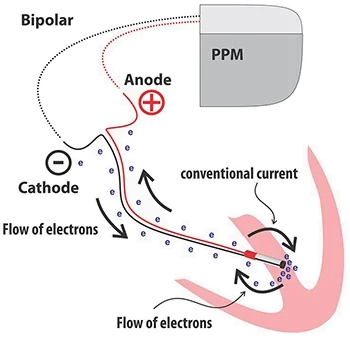
Điện cực lưỡng cực
- Cathode và anode nằm ở đầu tận
- Loại này được dùng thường xuyên hơn
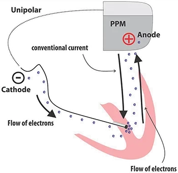
Điện cực đơn cực
- Chỉ có cathode nằm ở đầu tận
- Anode chính là bản thân PCM
Cố định dây điện cực
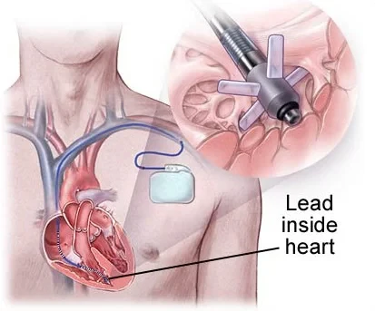
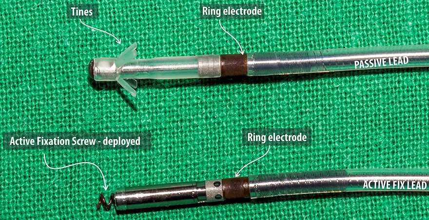
- Máy tạo nhịp
- Được cấy dưới da, dưới xương đòn
- Các dây điện cực (lead)
- Được đưa vào qua tĩnh mạch dưới đòn tới buồng tim tương ứng
- Có 2 phương pháp cố định dây điện cực trong buồng tim
- Thụ động bằng các ngạnh cài vào bè cơ của buồng tim
- Chủ động bằng một vít (vặn vào cơ tim)
Điện cực lưỡng cực (cố định thụ động và chủ động)
- Cả hai dây điện cực đều là lưỡng cực (có cả anode và cathode)
- Điện cực thụ động
- Đầu tận của điện cực được đưa vào buồng tim, nơi có các bè cơ
- Các ngạnh móc vào bè cơ
- Điện cực chủ động
- Vặn vít chủ động vào cơ tim trong buồng tim
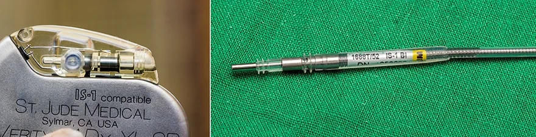
Khối nối và điện cực của máy tạo nhịp
- Mỗi máy tạo nhịp đều có một khối nối để cắm điện cực vào
Máy tạo nhịp không dây điện cực (leadless pacemaker)
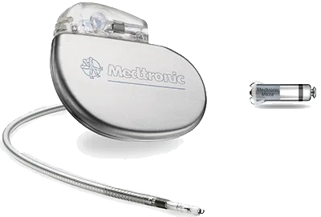
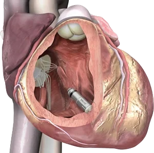
Máy tạo nhịp không dây điện cực
- Được cấy vào thất phải
- Không có dây điện cực (như PCM truyền thống)
Tạo nhịp và nhận cảm
- Tạo nhịp (pacing)
- Tạo nhịp xảy ra khi PCM phát ra một xung (dòng electron giữa cathode và anode)
- Đó là sự kích thích điện (khử cực) cơ tim
- Trên ECG, nó biểu hiện thành các gai tạo nhịp (pacing artifact) "những đường thẳng đứng"
- Điện cực lưỡng cực tạo ra gai tạo nhịp trên ECG nhỏ hơn so với điện cực đơn cực
- Nhận cảm (sensing)
- Mỗi điện cực (ngoài chức năng tạo nhịp) đều có thể phát hiện hoạt động điện của chính quả tim
- Nhận cảm không nhìn thấy được trên ECG
- Nhận cảm và tạo nhịp phải được bác sĩ cài đặt
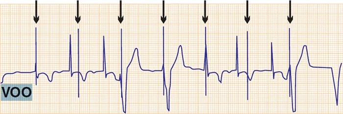
Tạo nhịp thất không đồng bộ
- Gai tạo nhịp biểu hiện thành những đường thẳng đứng
- Máy tạo nhịp đang ở chế độ VOO
Bài 2. Máy tạo nhịp (PCM), ICD, CRT
Máy tạo nhịp (pacemaker – PCM), máy phá rung tự động cấy được (Implantable cardioverter-defibrillator – ICD), liệu pháp tái đồng bộ tim (Cardiac resynchronization therapy – CRT), tạo nhịp hai thất.
Máy tạo nhịp (pacemaker – PCM)
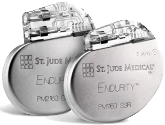
- Là một thiết bị bảo vệ tim khỏi nhịp chậm có triệu chứng
- Được cấy dưới xương đòn trái
- Tạo ra các xung điện và truyền chúng tới cơ tim qua các điện cực
- Theo số lượng điện cực, máy tạo nhịp được chia thành:
- Máy tạo nhịp một buồng
- Máy tạo nhịp hai buồng
- Các chỉ định đặt máy tạo nhịp thường gặp nhất:
- Hội chứng suy nút xoang
- Block nhĩ – thất độ III
- Block nhĩ – thất độ II (Mobitz II)
- Rung nhĩ (đáp ứng thất chậm)
- Block hai phân nhánh
- Block ba phân nhánh
- Tăng nhạy cảm xoang cảnh
- Các khoảng ngừng vô tâm thu không giải thích được (>3s)
- Với các chẩn đoán nêu trên, bệnh nhân hầu như luôn luôn
- Phải có nhịp chậm có triệu chứng hoặc ngất
Máy tạo nhịp một buồng
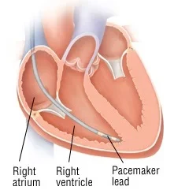
- Có một điện cực được đưa vào:
- Nhĩ phải hoặc thất phải
- Điện cực có thể thực hiện cả tạo nhịp và nhận cảm của buồng tim đó
- Đưa vào nhĩ phải, ví dụ:
- Trong các trường hợp hội chứng suy nút xoang với dẫn truyền nhĩ – thất còn nguyên vẹn
- Đưa vào thất phải, ví dụ:
- Trong các trường hợp rung nhĩ đáp ứng thất chậm
Máy tạo nhịp không dây điện cực (leadless pacemaker)
- Thay thế cho máy tạo nhịp một buồng ở thất phải, máy tạo nhịp không dây điện cực đang bắt đầu được sử dụng
- Nó được cấy vào mỏm thất phải
Máy tạo nhịp hai buồng
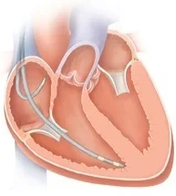
- Có 2 điện cực được đưa vào:
- Nhĩ phải và thất phải
- Mỗi điện cực có thể thực hiện tạo nhịp và nhận cảm của buồng tim đó
- Block nhĩ – thất độ III
- Nhĩ và thất bị cô lập về điện với nhau
- Máy tạo nhịp hai buồng loại bỏ:
- Hoạt động không đồng bộ của nhĩ và thất (phân ly nhĩ – thất)
- Nguy cơ vô tâm thu trong nhịp thất
- Điện cực nhĩ thực hiện nhận cảm nhĩ
- Điện cực thất thực hiện tạo nhịp thất
ICD (máy phá rung tự động cấy được – Implantable Cardioverter-Defibrillator)
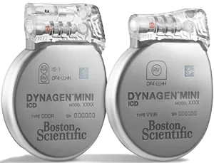
- ICD là máy phá rung tự động cấy được (Implantable Cardioverter-Defibrillator)
- Là một thiết bị bảo vệ tim khỏi các rối loạn nhịp thất ác tính:
- Rung thất
- Nhịp nhanh thất
- Chấm dứt các rối loạn nhịp ác tính bằng:
- Tạo nhịp chống nhịp nhanh (antitachycardia pacing) hoặc sốc phá rung
- Sốc phá rung "đá" vào ngực bệnh nhân
- Tạo nhịp chống nhịp nhanh (antitachycardia pacing) hoặc sốc phá rung
- ICD = máy tạo nhịp (PCM) + máy phá rung
- Thiết bị ICD cũng có thể hoạt động như một máy tạo nhịp (PCM)
- Do đó, nó cũng bảo vệ tim khỏi nhịp chậm có triệu chứng
- Nó có thể là loại một buồng hoặc hai buồng
- Các chỉ định đặt ICD thường gặp nhất:
- Rối loạn nhịp nhanh thất tái phát kèm ngất
- Hội chứng Brugada
- Hội chứng QT dài
- Loạn sản thất phải gây loạn nhịp
CRT (liệu pháp tái đồng bộ tim – Cardiac Resynchronization Therapy)
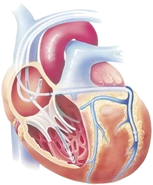
- CRT là một thiết bị dùng cho liệu pháp tái đồng bộ tim
- Nó được sử dụng trong co bóp thất mất đồng bộ
- Ví dụ, trong block nhánh trái (LBBB)
- CRT thường được gọi là máy tạo nhịp hai thất
- Nó bảo đảm tạo nhịp đồng bộ của các thất
- CRT có 3 dây điện cực:
- Nhĩ phải
- Dây điện cực nhĩ thực hiện nhận cảm
- Thất phải
- Thất trái (đưa vào qua xoang vành)
- Các dây điện cực thất thực hiện tạo nhịp đồng bộ
- Đôi khi, CRT chỉ có 2 dây điện cực ở các thất
- Nhĩ phải
- Có 2 loại thiết bị CRT:
- CRT-P (Cardiac Resynchronization Therapy - Pacemaker)
- (Máy tạo nhịp hai thất)
- CRT-D (Cardiac Resynchronization Therapy - Defibrillator)
- (Máy tạo nhịp hai thất + máy phá rung)
- Bảo vệ tim khỏi rối loạn nhịp thất ác tính (giống như ICD)
- CRT-P (Cardiac Resynchronization Therapy - Pacemaker)
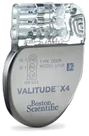
CRT-P
- Là một máy tạo nhịp hai thất
- 1 dây điện cực thực hiện nhận cảm nhĩ
- 2 dây điện cực thực hiện tạo nhịp thất
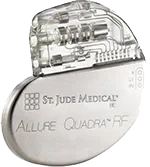
CRT-D
- Là một máy tạo nhịp hai thất và máy phá rung
- 1 dây điện cực thực hiện nhận cảm nhĩ
- 2 dây điện cực thực hiện tạo nhịp thất
- Dây điện cực thất có thể phát ra sốc phá rung
- Giống hệt như ICD
- Trong trường hợp co bóp thất mất đồng bộ (thường gặp nhất là kèm block nhánh trái), nó
- Làm giãn rộng phức bộ QRS
- Làm giảm phân suất tống máu thất trái (LVEF)
- Các chỉ định đặt CRT thường gặp nhất:
- Giảm LVEF ≤ 35% và độ rộng QRS ≥ 0.15s
- CRT-D được cấy thường xuyên hơn (đồng thời cũng có vai trò dự phòng rối loạn nhịp ác tính)
Các thiết bị cấy ghép
- Máy tạo nhịp là thiết bị bảo vệ tim khỏi nhịp chậm
- ICD = máy tạo nhịp + máy phá rung. ICD bảo vệ tim khỏi nhịp chậm và khỏi rối loạn nhịp thất ác tính
- CRT-P là một máy tạo nhịp hai thất giúp đồng bộ hoá co bóp của các thất
- CRT-D = CRT-P + máy phá rung. Đây là một máy tạo nhịp hai thất có khả năng bảo vệ khỏi rối loạn nhịp thất ác tính
Bài 3. Các chế độ tạo nhịp của máy tạo nhịp (mã NBG)
Danh pháp tạo nhịp, các mã và chế độ của máy tạo nhịp, mã NBG
Máy tạo nhịp
- PCM (máy tạo nhịp – pacemaker) là một thiết bị được cấy dưới xương đòn trái
- Nó được dùng để kiểm soát nhịp tim
- Chủ yếu, nó bảo vệ tim khỏi tình trạng nhịp chậm (bradycardia) có triệu chứng
- Nó có thể có 1, 2 hoặc 3 điện cực (electrode)
- Mỗi điện cực được đặt ở một buồng tim khác nhau:
- Nhĩ phải, thất phải, thất trái
- Thông qua các điện cực, máy tạo nhịp có thể
- Phát hiện hoạt động điện của buồng tim đó (nhận cảm – sensing)
- Kích thích buồng tim tương ứng (tạo nhịp – pacing)
- Mỗi điện cực được đặt ở một buồng tim khác nhau:
Tạo nhịp và nhận cảm
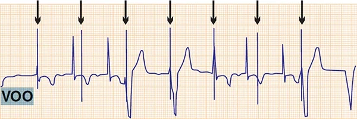
- Tạo nhịp (pacing)
- Tạo nhịp xảy ra khi PCM phát ra một xung điện
- Đó là sự kích thích điện (khử cực) cơ tim
- Trên ECG, nó hiện ra dưới dạng gai tạo nhịp (pacing artifact) "các vạch thẳng đứng"
- Nhận cảm (sensing)
- Mỗi điện cực (ngoài chức năng tạo nhịp) đều có thể phát hiện hoạt động điện tự thân của tim
- Nhận cảm không nhìn thấy được trên ECG
Tạo nhịp thất không đồng bộ (VOO)
- Các gai tạo nhịp hiện ra dưới dạng các vạch thẳng đứng
- Đây là máy tạo nhịp ở chế độ VOO (tạo nhịp thất không đồng bộ)
- Tạo nhịp VOO hoạt động giống như nhịp song song (parasystole)
- Tim có 2 ổ chủ nhịp tự chủ:
- Nhịp xoang của chính nó
- Nhịp thất từ máy tạo nhịp
Danh pháp (mã NBG)
- Một máy tạo nhịp có thể có 1 đến 3 điện cực
- Mỗi điện cực có thể thực hiện tạo nhịp và nhận cảm ở buồng tim tương ứng
- Mỗi máy tạo nhịp có thể được lập trình sang một chế độ cụ thể
- Các chế độ được ký hiệu bằng các mã (AAI, DDDR, VVI, VDDR)
- Các hội điện sinh lý học của Hoa Kỳ (NASPE) và của Anh (BPEG):
- North American Society of Pacing and Electrophysiology (NASPE)
- British Pacing and Electrophysiology Group (BPEG)
- Đã thông qua một phân loại thống nhất vào năm 1987: Mã NBG (NBG Code)
- NASPE / BPEG Generic Code (sửa đổi lần cuối năm 2002)
- Mã NBG là bắt buộc đối với mọi nhà sản xuất máy tạo nhịp
Chế độ tạo nhịp
- Chế độ tạo nhịp về bản chất chính là mã NBG của máy tạo nhịp
- Thuật ngữ "chế độ tạo nhịp" (stimulation mode) được dùng phổ biến hơn
- Mọi máy tạo nhịp đều được phân loại theo bảng sau
Vị trí | I | II | III | IV | V |
Buồng tim được tạo nhịp | Buồng tim được nhận cảm | Đáp ứng với nhận cảm | Điều biến tần số | Tạo nhịp đa vị trí | |
O = Tắt | O = Tắt | O = Tắt | O = Tắt | O = Tắt | |
A = Nhĩ | A = Nhĩ | T = Khởi kích | R = Điều biến tần số | A = Nhĩ | |
V = Thất | V = Thất | I = Ức chế | V = Thất | ||
D = Kép (A+V) | D = Kép (A+V) | D = Kép (T+I) | D = Kép (A+V) |
Vị trí
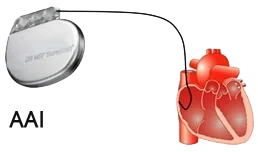
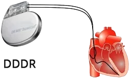
- Chế độ tạo nhịp có tối đa 5 chữ cái in hoa
- Mỗi chữ cái có vị trí riêng (I - V)
- Ví dụ, các chế độ: AAI, VVI, DDD, DDDR...
- Vị trí của chữ cái rất quan trọng
- Chữ cái ở mỗi vị trí quy định cho máy tạo nhịp một thuộc tính nhất định
- Nguyên tắc được minh hoạ bằng hai ví dụ: AAI, DDDR
I. Vị trí (Buồng tim được tạo nhịp)
- Chữ cái thứ nhất cho biết buồng tim nào được tạo nhịp (buồng tim nào được máy tạo nhịp kích thích)
- O (Off) không buồng nào
- A (Atrium) nhĩ
- V (Ventricle) thất
- D (Dual) cả nhĩ và thất
- AAI: Ở vị trí thứ nhất là "A". Nó chỉ sự kích thích nhĩ, tức là tạo nhịp nhĩ
- DDDR: Ở vị trí thứ nhất là "D". Nó chỉ sự kích thích cả nhĩ và thất, tức là tạo nhịp kép
II. Vị trí (Buồng tim được nhận cảm)
- Chữ cái thứ hai cho biết buồng tim nào được nhận cảm
- Máy tạo nhịp nhận cảm hoạt động điện tự thân của buồng tim qua điện cực và quyết định việc tạo nhịp ở một buồng tim nhất định
- Vị trí thứ hai cho biết buồng tim nào đang được nhận cảm:
- O (Off) không buồng nào
- A (Atrium) nhĩ
- V (Ventricle) thất
- D (Dual) cả nhĩ và thất
- AAI: Ở vị trí thứ hai là "A". Nó chỉ nhận cảm nhĩ
- DDDR: Ở vị trí thứ hai là "D". Nó chỉ sự nhận cảm ở cả nhĩ và thất – nhận cảm kép
III. Vị trí (Đáp ứng với nhận cảm)
- Chữ cái thứ ba cho biết máy tạo nhịp đáp ứng với nhận cảm như thế nào
- I (Inhibited). Nhận cảm dương tính ức chế việc tạo nhịp
- T (Triggered). Nhận cảm dương tính khởi kích việc tạo nhịp
- D (Dual). Máy tạo nhịp hoạt động như "I" hoặc như "T" tuỳ theo nhu cầu
- AAI: Ở vị trí thứ ba là "I"
- Nhận cảm dương tính ức chế việc tạo nhịp
- Nếu có các xung tự thân ở nhĩ, máy tạo nhịp không phát xung
- Nhận cảm dương tính ức chế việc tạo nhịp
- DDDR: Ở vị trí thứ ba là "D"
- "D" thứ nhất: Cả nhĩ và thất đều có thể được tạo nhịp
- "D" thứ hai: Cả nhĩ và thất đều có thể được nhận cảm
- "D" thứ ba: Tín hiệu nhận cảm từ nhĩ hoặc từ thất được đánh giá
- Và sau đó thất hoặc nhĩ được ức chế hoặc được khởi kích (tạo nhịp)
IV. Vị trí (Điều biến tần số)
- Chữ cái thứ tư cho biết máy tạo nhịp có thể thay đổi tần số tạo nhịp hay không
- R (Rate modulation). Máy tạo nhịp điều chỉnh tần số tạo nhịp theo nhu cầu (ví dụ, trong khi hoạt động thể lực)
- O (Off) nghĩa là "R" bị tắt
- Nếu cả vị trí IV và V đều là O, chúng không được đưa vào tên chế độ (AAIO = AAI)
- AAI = AAIO. Máy tạo nhịp có chức năng điều biến tần số đang tắt
- DDDR: Ở vị trí thứ tư là "R". Máy tạo nhịp điều chỉnh tần số tạo nhịp
V. Vị trí (Tạo nhịp đa vị trí)
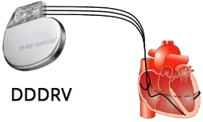
- Chữ cái thứ năm hiếm khi được dùng
- Nó cho biết nhĩ hoặc thất có được tạo nhịp từ nhiều điện cực hay không
- 0 (Off) chức năng bị tắt
- A (Atrium) tạo nhịp nhĩ đa vị trí
- V (Ventricle) tạo nhịp thất đa vị trí
- D (Dual) tạo nhịp đa vị trí ở cả nhĩ và thất
- Một thiết bị CRT-P có 3 điện cực:
- Nhĩ phải
- Thất phải
- Thất trái (đưa vào qua xoang vành)
- Các điện cực thất bảo đảm tạo nhịp đồng bộ
- Các thất được tạo nhịp qua hai điện cực (tạo nhịp thất đa vị trí)
- D - Tạo nhịp ở nhĩ và thất
- D - Nhận cảm ở nhĩ và thất
- D - Ức chế và khởi kích việc tạo nhịp
- R - Điều biến tần số
- V - Tạo nhịp hai thất (tạo nhịp thất đa vị trí)
- Đây là một thiết bị CRT-P
Các chế độ của máy tạo nhịp một buồng
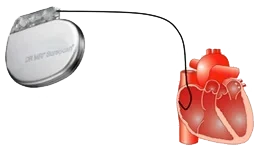
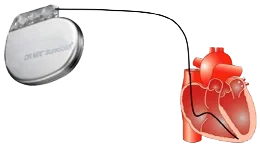
- Máy tạo nhịp một buồng chỉ có một điện cực
- Được đặt ở nhĩ phải hoặc ở thất phải
- Các chế độ của máy tạo nhịp một buồng
- VOO
- VVI
- AOO
- AAI
Các chế độ của máy tạo nhịp hai buồng
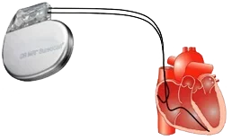
- Máy tạo nhịp hai buồng có hai điện cực
- Được đặt ở nhĩ phải và thất phải
- Các chế độ của máy tạo nhịp hai buồng
- DDD (chế độ có dẫn truyền – tracking mode)
- VDD (chế độ có dẫn truyền – tracking mode)
- DDI (chế độ không dẫn truyền – non-tracking mode)
- DOO (chế độ không dẫn truyền – non-tracking mode)
Nam châm và máy tạo nhịp
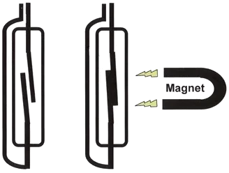
- Mỗi máy tạo nhịp đều có một công tắc lưỡi gà (reed switch)
- Công tắc này đóng mạch và được kích hoạt trong từ trường
- Một nam châm được dùng để kích hoạt nó
- Đặt trên lồng ngực phía trên máy tạo nhịp
- Nam châm khi được đặt trên lồng ngực:
- Tắt chức năng nhận cảm
- Bật tạo nhịp không đồng bộ
- Nam châm
- Chuyển máy tạo nhịp sang tạo nhịp không đồng bộ:
- VVI => V00
- AAI => A00
- DDD => D00
- Dùng để kiểm tra pin của máy tạo nhịp
- Nếu tạo nhịp không đồng bộ không khởi động, pin đã hết
- Vô hiệu hoá ICD (máy phá rung tự động cấy được – Implantable Cardioverter Defibrillator)
- Chấm dứt nhịp nhanh do máy tạo nhịp
- Vì nó bật tạo nhịp không đồng bộ
- Chuyển máy tạo nhịp sang tạo nhịp không đồng bộ:
Bài 4. Các chế độ của máy tạo nhịp một buồng
Các chế độ một buồng của máy tạo nhịp (pacemaker – PCM)
Máy tạo nhịp
- PCM là một thiết bị được cấy dưới xương đòn trái
- Thiết bị này dùng để kiểm soát nhịp tim
- Chủ yếu, nó bảo vệ tim khỏi nhịp chậm có triệu chứng (bradycardia)
- Máy có thể có 1, 2 hoặc 3 dây điện cực (lead)
- Mỗi dây điện cực được đưa vào một buồng tim khác nhau:
- Nhĩ phải, thất phải, thất trái
- Qua các dây điện cực, máy tạo nhịp có thể
- Nhận cảm hoạt động điện của buồng tim (sensing)
- Kích thích buồng tim tương ứng (pacing)
- Mỗi dây điện cực được đưa vào một buồng tim khác nhau:
Các chế độ kích thích
- Mỗi máy tạo nhịp được phân loại theo mã NBG (bảng dưới)
Vị trí | I | II | III | IV | V |
Buồng được tạo nhịp | Buồng được nhận cảm | Đáp ứng với nhận cảm | Điều biến tần số | Tạo nhịp đa vị trí | |
O = Tắt | O = Tắt | O = Tắt | O = Tắt | O = Tắt | |
A = Nhĩ | A = Nhĩ | T = Khởi kích | R = Điều biến tần số | A = Nhĩ | |
V = Thất | V = Thất | I = Ức chế | V = Thất | ||
D = Kép (A+V) | D = Kép (A+V) | D = Kép (T+I) | D = Kép (A+V) |
Các chế độ của máy tạo nhịp một buồng
- Máy tạo nhịp một buồng chỉ có 1 dây điện cực
- Ở nhĩ phải hoặc thất phải
- Các chế độ một buồng gồm:
- VOO
- VVI
- AOO
- AAI
Tạo nhịp VOO
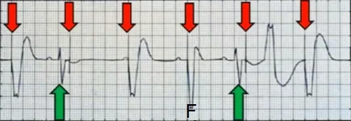
- V - Tạo nhịp thất
- O - Nhận cảm tắt
- O - Đáp ứng với nhận cảm tắt
- Đây là tạo nhịp không đồng bộ
- Máy tạo nhịp có tần số lập trình riêng của nó, bất kể hoạt động nội tại của tim
Tạo nhịp VOO (tạo nhịp thất không đồng bộ)
- Tần số tạo nhịp 60/min. (1000ms) (mũi tên đỏ)
- QRS thứ 2 và thứ 5 là các phức bộ QRS nội tại (mũi tên xanh lá)
- Theo sau là xung tạo nhịp rơi vào thời kỳ trơ (refractory period)
- Cơ tim không thể bị kích thích trong thời kỳ trơ
- F là một nhát bóp hoà nhập (fusion beat)
- Phức bộ QRS được tạo ra bởi 2 xung
- Từ máy tạo nhịp và từ một xung xoang
- QRS áp chót là một ngoại tâm thu thất tự phát (ventricular extrasystole)
- Tạo nhịp VOO hoạt động giống như nhịp song song (parasystole)
- Tim có 2 ổ tạo nhịp tự chủ:
- Nhịp xoang nội tại của chính nó
- Nhịp thất từ máy tạo nhịp
Tạo nhịp VVI
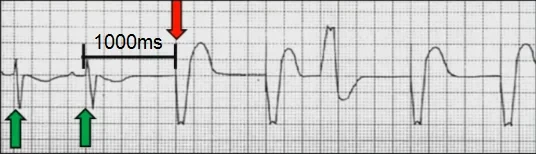
- V - Tạo nhịp thất
- V - Nhận cảm thất
- I - Nhận cảm dương tính ức chế tạo nhịp
- Máy tạo nhịp nhận cảm hoạt động điện nội tại của buồng tim
- Hoạt động điện nội tại "tắt" tạo nhịp
Tạo nhịp VVI
- Máy tạo nhịp được lập trình ở tần số 60/min. (1000ms - 5 ô lớn (5 squares))
- Nhận cảm phát hiện mỗi phức bộ QRS
- Nếu không có QRS nội tại nào xuất hiện trong vòng 1000ms kể từ QRS trước đó, tạo nhịp được kích hoạt
- QRS thứ 1 và thứ 2 là các phức bộ QRS nội tại (mũi tên xanh lá)
- Khoảng cách giữa chúng là 800ms
- Sau QRS thứ 2, không có QRS nội tại nào xuất hiện trong vòng 1000ms, nên tạo nhịp đã được kích hoạt (mũi tên đỏ)
- QRS thứ 5 là một ngoại tâm thu thất, theo sau lại là tạo nhịp sau 1000ms
Tạo nhịp AOO
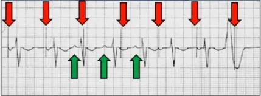
- A - Tạo nhịp nhĩ
- O - Nhận cảm tắt
- O - Đáp ứng với nhận cảm tắt
- Đây là tạo nhịp nhĩ không đồng bộ
- Máy tạo nhịp có tần số cài đặt sẵn, bất kể hoạt động nhĩ nội tại
Tạo nhịp AOO (tạo nhịp nhĩ không đồng bộ)
- Tần số tạo nhịp 70/min. (857ms) (mũi tên đỏ)
- QRS thứ 3, thứ 4 và thứ 5 (mũi tên xanh lá) là các phức bộ QRS xoang nội tại
- Hoạt động nhĩ nội tại không ức chế tạo nhịp
Tạo nhịp AAI
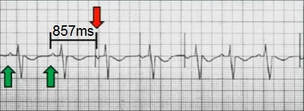
- A - Tạo nhịp nhĩ
- A - Nhận cảm nhĩ
- I - Nhận cảm dương tính ức chế tạo nhịp
- Máy tạo nhịp nhận cảm hoạt động nhĩ nội tại
- Hoạt động điện nội tại "tắt" tạo nhịp
Tạo nhịp AAI
- Máy tạo nhịp được lập trình ở tần số 70/min. (857ms)
- Nhận cảm ghi nhận mỗi sóng P
- Nếu không có sóng P nội tại nào xuất hiện trong vòng 857ms kể từ sóng P trước đó, tạo nhịp được kích hoạt
- Sóng P thứ 1 và thứ 2 là các sóng P nội tại (mũi tên xanh lá)
- Khoảng cách giữa chúng là 850ms
- Không có sóng P nội tại nào xuất hiện trong vòng 857ms sau sóng P thứ 2, nên tạo nhịp được kích hoạt (mũi tên đỏ)
- Tạo nhịp nhĩ khởi động nếu không có sóng P nội tại nào xuất hiện trong vòng 857ms
Bài 5. Các chế độ của máy tạo nhịp hai buồng
Các chế độ hai buồng của máy tạo nhịp
Máy tạo nhịp
- PCM (máy tạo nhịp – pacemaker) là một thiết bị được cấy dưới xương đòn trái
- Nó có nhiệm vụ kiểm soát nhịp tim
- Trước hết, nó bảo vệ tim khỏi nhịp chậm có triệu chứng (symptomatic bradycardia)
- Nó có thể có 1, 2 hoặc 3 điện cực (electrode)
- Mỗi điện cực được đưa vào một buồng tim khác nhau:
- Nhĩ phải, thất phải, thất trái
- Thông qua các điện cực, máy tạo nhịp có thể
- Nhận cảm hoạt động điện của buồng tim đó (sensing)
- Kích thích buồng tim tương ứng (pacing)
- Mỗi điện cực được đưa vào một buồng tim khác nhau:
Chế độ kích thích
- Mỗi máy tạo nhịp đều được phân loại theo mã NBG (xem bảng sau)
Vị trí | I | II | III | IV | V |
Buồng được tạo nhịp | Buồng được nhận cảm | Đáp ứng với nhận cảm | Điều biến tần số | Tạo nhịp đa vị trí | |
O = Tắt | O = Tắt | O = Tắt | O = Tắt | O = Tắt | |
A = Nhĩ | A = Nhĩ | T = Khởi kích | R = Điều biến tần số | A = Nhĩ | |
V = Thất | V = Thất | I = Ức chế | V = Thất | ||
D = Kép (A+V) | D = Kép (A+V) | D = Kép (T+I) | D = Kép (A+V) |
Các chế độ của máy tạo nhịp hai buồng
- Máy tạo nhịp hai buồng có 2 điện cực
- Ở nhĩ phải và thất phải
- Các chế độ hai buồng gồm:
- DDD (chế độ có dẫn truyền – tracking mode)
- VDD (chế độ có dẫn truyền – tracking mode)
- DDI (chế độ không dẫn truyền – non-tracking mode)
- DOO (chế độ không dẫn truyền – non-tracking mode)
Tạo nhịp DDD
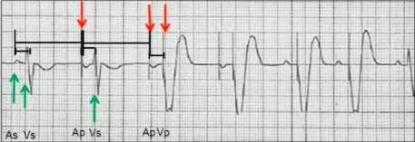
- D - Tạo nhịp nhĩ và thất
- D - Nhận cảm nhĩ và thất
- D - Hoạt động điện nội tại (P, QRS) có thể ức chế hoặc khởi kích việc tạo nhịp
- Máy tạo nhịp nhận cảm hoạt động điện nội tại và theo đó điều chỉnh việc tạo nhịp
- Tạo nhịp DDD gần như là một sự thay thế trung thực cho hệ thống dẫn truyền
Tạo nhịp DDD
- As - Nhận cảm nhĩ
- Vs - Nhận cảm thất
- Ap - Tạo nhịp nhĩ
- Vp - Tạo nhịp thất
- Máy tạo nhịp được lập trình
- Ở tần số 60/min. (1000ms)
- Với độ trễ AV (AV delay) là 200ms (tương tự bộ nối nhĩ – thất - khoảng PQ)
- Nếu không có QRS nào xuất hiện trong vòng 200ms sau sóng P, tạo nhịp thất (Vp) sẽ được khởi kích
- Nếu không có sóng P nào xuất hiện trong vòng 1000ms sau sóng P, tạo nhịp nhĩ (Ap) sẽ được khởi kích
- Mũi tên xanh lá chỉ hoạt động tim nội tại (P, QRS)
- Mũi tên đỏ chỉ tạo nhịp nhĩ (Ap) hoặc tạo nhịp thất (Vp)
Các biến thể của chế độ DDD
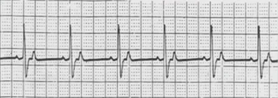
- Tạo nhịp DDD có thể có 4 biến thể dựa trên hoạt động tim nội tại (P, QRS):
- AsVs
- AsVp
- ApVs
- ApVp
Chế độ DDD (AsVs)
- Máy tạo nhịp được lập trình
- Ở tần số 60/min. (1000ms)
- Với độ trễ AV là 200ms (tương tự bộ nối nhĩ – thất - khoảng PQ)
- Hoạt động tim nội tại (P và QRS) ức chế việc tạo nhịp
- Chức năng của nút xoang và dẫn truyền nhĩ – thất được bảo tồn
- Máy tạo nhịp hoạt động ở chế độ AsVs
- Chỉ thực hiện nhận cảm nhĩ (As) và nhận cảm thất (Vs)
- Không thấy tạo nhịp (gai kích thích) trên ECG, cho thấy máy tạo nhịp bị ức chế hoàn toàn
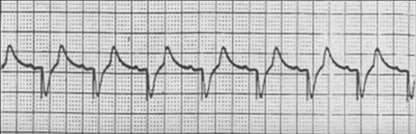
Chế độ DDD (AsVp)
- Máy tạo nhịp được lập trình
- Ở tần số 60/min. (1000ms)
- Với độ trễ AV là 200ms (tương tự bộ nối nhĩ – thất - khoảng PQ)
- Nút xoang (các sóng P) hoạt động bình thường
- Tuy nhiên, sau sóng P, không có QRS nội tại (do dẫn truyền nhĩ – thất kéo dài > 200ms, hoặc do block dẫn truyền)
- Máy tạo nhịp hoạt động ở chế độ AsVp
- Nó thực hiện nhận cảm nhĩ (As) và tạo nhịp thất (Vp)
- Dẫn truyền xung động nhĩ xuống các thất
- Biến thể AsVp đôi khi được gọi là dẫn truyền sóng P (P wave tracking) (truyền sóng P xuống các thất)
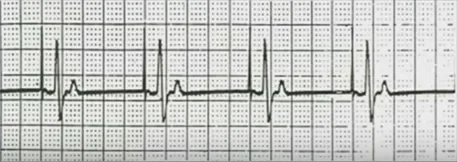
Chế độ DDD (ApVs)
- Máy tạo nhịp được lập trình
- Ở tần số 60/min. (1000ms)
- Với độ trễ AV là 200ms (tương tự bộ nối nhĩ – thất - khoảng PQ)
- Nút xoang bị suy giảm, nhưng dẫn truyền nhĩ – thất vẫn hoạt động bình thường
- Sau một sóng P được tạo nhịp, một phức bộ QRS tự nhiên đi theo
- Máy tạo nhịp hoạt động ở chế độ ApVs
- Nó thực hiện tạo nhịp nhĩ (Ap) và nhận cảm thất (Vs)
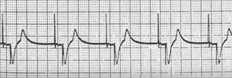
Chế độ DDD (ApVp)
- Máy tạo nhịp được lập trình
- Ở tần số 60/min. (1000ms)
- Với độ trễ AV là 200ms (tương tự bộ nối nhĩ – thất - khoảng PQ)
- Cả nút xoang và dẫn truyền nhĩ – thất đều bị suy giảm
- Máy tạo nhịp hoạt động ở chế độ ApVp
- Nó thực hiện tạo nhịp nhĩ (Ap) và tạo nhịp thất (Vp)
Tạo nhịp VDD
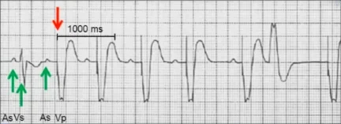
- V - Tạo nhịp thất
- D - Nhận cảm nhĩ và thất
- D - Hoạt động điện nội tại (P, QRS) có thể ức chế hoặc khởi kích tạo nhịp thất
- Máy tạo nhịp không thể tạo nhịp nhĩ, nó được dùng để duy trì dẫn truyền nhĩ – thất
Tạo nhịp VDD
- Máy tạo nhịp được lập trình
- Ở tần số 60/min. (1000ms)
- Với độ trễ AV là 200ms (tương tự bộ nối nhĩ – thất - khoảng PQ)
- Phức bộ P-QRS thứ nhất là nội tại, máy tạo nhịp chỉ thực hiện nhận cảm (AsVs)
- Sóng P thứ hai là nội tại, và máy tạo nhịp thực hiện nhận cảm (As)
- Tuy nhiên, không có QRS nội tại nào theo sau trong vòng 200ms, nên máy tạo nhịp kích hoạt tạo nhịp thất (Vp) - được chỉ bằng mũi tên đỏ
- Tạo nhịp thất luôn được kích hoạt nếu không có QRS nội tại nào theo sau sóng P trong vòng 200ms
- Sau một ngoại tâm thu thất (ventricular extrasystole) (QRS áp chót), tạo nhịp thất (Vp) xuất hiện sau đó 1000ms mà không có sóng P nội tại
- Máy tạo nhịp đã đi trước nút xoang
- Trong trường hợp này, đồng bộ nhĩ – thất không được duy trì với tạo nhịp VDD (điều mà chế độ DDD sẽ duy trì được)
- Bệnh nhân có tạo nhịp VDD phải có nút xoang còn nguyên vẹn
Tạo nhịp DDI
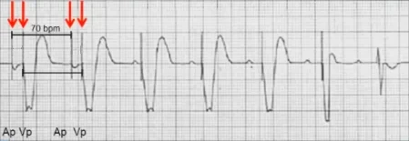
- D - Tạo nhịp cả nhĩ và thất
- D - Nhận cảm cả nhĩ và thất
- I - Hoạt động điện nội tại (P, QRS) ức chế việc tạo nhịp (ở thất hoặc ở nhĩ)
- DDI là sự kết hợp của các chế độ AAI và VVI, hoạt động độc lập với nhau
Tạo nhịp DDI
- Máy tạo nhịp được lập trình ở tần số 70/min. (857ms)
- Chế độ DDI là sự kết hợp của các chế độ AAI và VVI, hoạt động độc lập với nhau
- AAI: Nếu không có sóng P nào xuất hiện trong vòng 857ms sau một sóng P nội tại, tạo nhịp nhĩ sẽ được khởi kích
- VVI: Nếu không có QRS nào xuất hiện trong vòng 857ms sau một QRS nội tại, tạo nhịp thất sẽ được khởi kích
- Về cuối đoạn ECG, tần số các sóng P nội tại tăng lên, nhưng tần số tạo nhịp thất không tăng
- DDI được dùng trong hội chứng suy nút xoang (sick sinus syndrome) kèm các cơn nhịp nhanh trên thất kịch phát
Tạo nhịp DOO
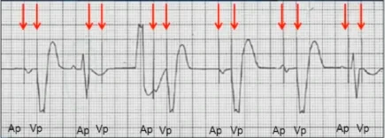
- D - Tạo nhịp cả nhĩ và thất
- O - Nhận cảm tắt
- O - Đáp ứng với nhận cảm tắt
- Chế độ này thể hiện tạo nhịp không đồng bộ ở nhĩ và thất, bất kể hoạt động tim nội tại
Tạo nhịp DOO
- Máy tạo nhịp được lập trình
- Ở tần số 60/min. (1000ms)
- Với độ trễ AV là 200ms (tương tự bộ nối nhĩ – thất - khoảng PQ)
- Chế độ này thể hiện tạo nhịp không đồng bộ ở nhĩ và thất
- Được kích hoạt bằng cách đặt một nam châm lên ngực
Nam châm và máy tạo nhịp
- Mỗi máy tạo nhịp đều có một công tắc lưỡi gà (reed switch)
- Được kích hoạt trong một từ trường
- Dùng một nam châm để kích hoạt
- Đặt lên ngực, ngay trên máy tạo nhịp
- Đặt nam châm lên ngực sẽ:
- Tắt nhận cảm
- Kích hoạt tạo nhịp không đồng bộ
- Nam châm
- Chuyển máy tạo nhịp sang tạo nhịp không đồng bộ:
- VVI => V00
- AAI => A00
- DDD => D00
- Được dùng để kiểm tra pin của máy tạo nhịp
- Nếu tạo nhịp không đồng bộ không được kích hoạt, pin đã cạn
- Vô hiệu hoá ICD (máy phá rung tự động cấy được – Implantable Cardioverter Defibrillator)
- Chấm dứt nhịp nhanh do máy tạo nhịp
(pacemaker-mediated tachycardia)- Bằng cách kích hoạt tạo nhịp không đồng bộ
- Chuyển máy tạo nhịp sang tạo nhịp không đồng bộ:
Tạo nhịp DDDR
- D - Tạo nhịp cả nhĩ và thất
- D - Nhận cảm cả nhĩ và thất
- D - Hoạt động điện nội tại (P, QRS) có thể ức chế hoặc khởi kích việc tạo nhịp
- R - (Đáp ứng tần số – rate response, điều biến tần số – rate modulation)
- Máy tạo nhịp điều chỉnh tần số tạo nhịp theo nhu cầu của cơ thể
- Máy tạo nhịp nhận cảm hoạt động điện nội tại của buồng tim và theo đó điều chỉnh việc tạo nhịp
- Tạo nhịp DDDR gần như là một sự thay thế trung thực cho hệ thống dẫn truyền, có kèm thích ứng tần số
- Suy giảm đáp ứng tần số tim (chronotropic incompetence)
- Là tình trạng tim không thể điều chỉnh tần số một cách phù hợp theo nhu cầu của cơ thể
- Ví dụ khi gắng sức, khi căng thẳng, khi leo cầu thang
- Thường gặp nhất là do rối loạn chức năng nút xoang trong hội chứng suy nút xoang
- Một số máy tạo nhịp có tích hợp một cảm biến
- Cảm biến này nhận biết các rung động của cơ thể khi thở hoặc khi gắng sức tăng lên
- Dựa theo thông tin từ cảm biến, máy tạo nhịp điều chỉnh tần số tạo nhịp
- Những máy tạo nhịp này có chữ "R" ở vị trí IV: DDDR
- Là tình trạng tim không thể điều chỉnh tần số một cách phù hợp theo nhu cầu của cơ thể
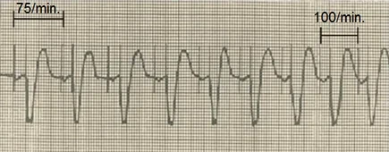
Tạo nhịp DDDR (ApVp)
- Máy tạo nhịp được lập trình
- Để thích ứng tần số theo nhu cầu của cơ thể
- Với độ trễ AV là 200ms (tương tự bộ nối nhĩ – thất - khoảng PQ)
- Nút xoang và dẫn truyền nhĩ – thất đều bị suy giảm
- Máy tạo nhịp hoạt động ở chế độ ApVp
- Tạo nhịp nhĩ (Ap) và tạo nhịp thất (Vp)
- Thích ứng tần số tạo nhịp
- Ban đầu tần số là 75/min., sau đó là 100/min.
- Tần số tạo nhịp nhĩ thay đổi, thứ phát làm thay đổi tần số tạo nhịp thất
- Độ trễ AV vẫn không thay đổi (200ms)
- Ban đầu tần số là 75/min., sau đó là 100/min.
Bài 6. Các khoảng thời gian, nhận cảm và tạo nhịp của máy tạo nhịp
Các khoảng thời gian (timing cycles) của máy tạo nhịp, nhận cảm, tạo nhịp
Nhận cảm (Sensing)
- Là khả năng của máy tạo nhịp (pacemaker – PCM) nhận cảm (sensing) được các xung điện nội tại của tim (sóng P, phức bộ QRS) thông qua điện cực
- Các xung từ buồng tim là thông tin đầu vào duy nhất của máy tạo nhịp, sau đó máy
- Đánh giá sự hiện diện của chúng (bao gồm tần số và tính đều đặn)
- Dựa trên nhận cảm, máy tạo nhịp khởi phát tạo nhịp (pacing)
- Đặt nam châm lên thành ngực phía trên máy tạo nhịp đã cấy sẽ vô hiệu hoá nhận cảm
- Độ nhạy nhận cảm
- Là khả năng phát hiện hoạt động điện nội tại (sóng P, QRS)
- Các vấn đề về nhận cảm gồm:
- Nhận cảm dưới mức (undersensing)
- Nhận cảm quá mức (oversensing)
Nhận cảm và máy tạo nhịp VVI
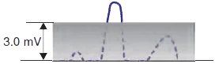
- Minh hoạ độ nhạy nhận cảm qua ví dụ máy tạo nhịp VVI
- V - tạo nhịp thất
- V - nhận cảm thất
- I - nhận cảm dương tính ức chế tạo nhịp
- Máy tạo nhịp VVI nhận cảm QRS nội tại qua điện cực đặt trong thất
Nhận cảm bình thường
- Độ nhạy nhận cảm được cài ở 3mV
- Phức bộ QRS nội tại đã vượt quá ngưỡng nhạy
- Nhận cảm dương tính
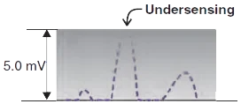
Nhận cảm dưới mức
- Độ nhạy nhận cảm được cài ở 5mV
- Phức bộ QRS nội tại không vượt quá ngưỡng nhạy
- Nhận cảm âm tính (đây là một lỗi)
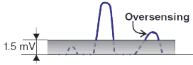
Nhận cảm quá mức
- Độ nhạy nhận cảm được cài ở 1.5mV
- Phức bộ QRS nội tại và sóng P đều vượt quá ngưỡng nhạy
- Nhận cảm dương tính hai lần (đây là một lỗi)
- Bởi vì máy tạo nhịp VVI lẽ ra chỉ được nhận cảm ở thất (QRS)
Tạo nhịp (Pacing)
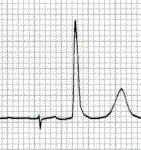
- Là khả năng của máy tạo nhịp kích thích cơ tim ở một buồng tim nhất định thông qua điện cực
- Điện cực kích thích cơ tim bằng một xung điện (tương tự nút xoang – SA node)
- Một điện cực đơn lẻ có thể thực hiện cả nhận cảm và tạo nhịp
- Tạo nhịp thể hiện trên ECG dưới dạng gai tạo nhịp (pacing artifact) (một vạch thẳng đứng, còn gọi là spike)
- Nhận cảm không thể hiện trên ECG
- Gai tạo nhịp (xung điện phát ra từ điện cực) có thể kích thích cả nhĩ lẫn thất
- Đặt nam châm lên thành ngực phía trên máy tạo nhịp đã cấy sẽ khởi động tạo nhịp không đồng bộ
Tạo nhịp nhĩ
- Máy tạo nhịp kích thích nhĩ
- Gai tạo nhịp nằm trước sóng P
- Chế độ AAI
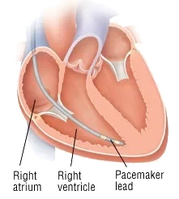
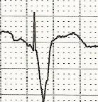
Tạo nhịp thất
- Máy tạo nhịp kích thích thất
- Gai tạo nhịp nằm trước phức bộ QRS
- Chế độ VVI
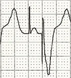
Tạo nhịp hai buồng
- Máy tạo nhịp kích thích cả nhĩ lẫn thất
- Gai tạo nhịp nằm trước cả sóng P lẫn phức bộ QRS
- Chế độ DDD
Khoảng thời gian và máy tạo nhịp
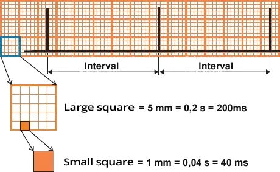
- 1 phút = 60 giây = 60,000 ms
- Tần số là số lần tâm thu/phút
- Một lần tâm thu tương ứng với một phức bộ QRS trên ECG
- Thường được dùng khi đọc ECG
- Khoảng thời gian được đo bằng ms (mili giây)
- Khoảng RR là số ms giữa các đỉnh R
- Được dùng khi đánh giá máy tạo nhịp
- Tần số = 60,000 / khoảng thời gian (ms)
Máy tạo nhịp và các khoảng thời gian
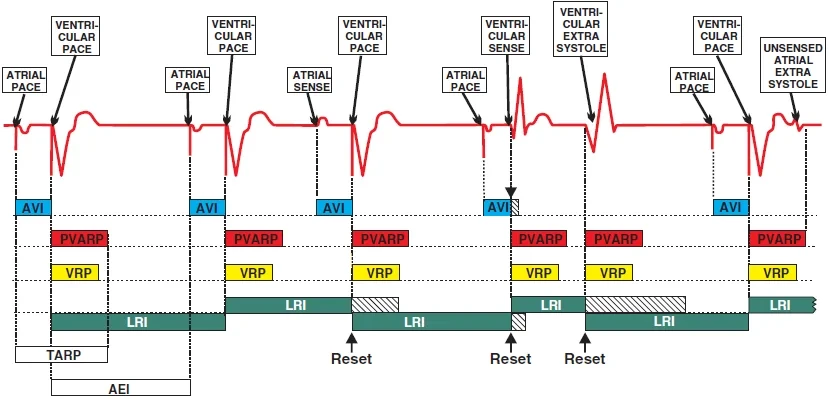
- Máy tạo nhịp dùng phần mềm riêng để quyết định:
- Khi nào bật và tắt nhận cảm
- Khi nào bật và tắt tạo nhịp
- Máy tạo nhịp có các khoảng thời gian được định sẵn (timing cycles) cho nhận cảm và tạo nhịp
- Các khoảng này được dùng để điều khiển nhận cảm và tạo nhịp
Máy tạo nhịp DDD
- Trên ECG, máy tạo nhịp đang ở chế độ DDD
- LRI (khoảng tần số dưới – Lower Rate Interval)
- Là tần số QRS chậm nhất mà máy tạo nhịp cho phép
- Nếu không có QRS tự nhiên xuất hiện trong LRI, tạo nhịp thất được kích hoạt ở cuối LRI
- VRP (thời kỳ trơ thất – Ventricular Refractory Period)
- Là thời kỳ sau nhận cảm thất hoặc tạo nhịp thất
- Máy tạo nhịp bỏ qua nhận cảm trong VRP
- Điều này giúp tránh nhận cảm sóng T
- AVI (khoảng nhĩ – thất)
- Là khoảng giữa tạo nhịp nhĩ (hoặc nhận cảm nhĩ) và tạo nhịp thất
- Nếu không có QRS tự nhiên xuất hiện ở cuối AVI, tạo nhịp thất được kích hoạt
- PVARP (thời kỳ trơ nhĩ sau tạo nhịp thất – Post Ventricular Atrial Refractory Period)
- Là thời kỳ sau tạo nhịp thất (hoặc nhận cảm thất), trong đó tín hiệu nhĩ không thể khởi phát dẫn truyền nhĩ – thất
- Điều này giúp tránh nhận cảm sóng P ngược dòng hoặc ngoại tâm thu nhĩ
- TARP (tổng thời kỳ trơ nhĩ – Total Atrial Refractory Period)
- TARP = AVI + PVARP
- TARP là tổng thời kỳ trơ đối với nhận cảm nhĩ
- Một sóng P rơi vào TARP sẽ không được dẫn xuống thất (không xuất hiện phức bộ QRS)
- TARP quyết định tần số sóng P tối đa còn được dẫn xuống thất trước khi xuất hiện block 2:1
- AEI (khoảng thoát nhĩ – Atrial Escape Interval)
- Là khoảng giữa tạo nhịp thất (hoặc nhận cảm thất) và tạo nhịp nhĩ
- Nếu không có sóng P tự nhiên xuất hiện ở cuối AEI, tạo nhịp nhĩ được kích hoạt
Giới hạn tần số dưới (LRL), khoảng tần số dưới (LRI)
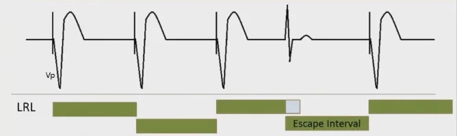
- Là tần số tim chậm nhất mà máy tạo nhịp cho phép
- Nhận cảm
- Nếu tần số tim tự nhiên cao hơn LRL,
máy tạo nhịp ức chế tạo nhịp
- Nếu tần số tim tự nhiên cao hơn LRL,
- Tạo nhịp
- Nếu tần số tim tự nhiên thấp hơn LRL, tạo nhịp được kích hoạt
- Máy tạo nhịp có các khoảng thời gian được định nghĩa bằng ms
- Nếu LRL được cài là 1000ms (LRI - khoảng tần số dưới)
- Thì tần số LRL là 60/min. (60,000ms / 1000ms)
Máy tạo nhịp VVI
- Máy tạo nhịp đang ở chế độ VVI
- LRL thể hiện bằng các gai tạo nhịp
(Vp - tạo nhịp thất) - QRS thứ 4 là QRS tự nhiên và xuất hiện sớm hơn so với LRL đã lập trình
- Khoảng nằm giữa QRS tự nhiên và nhát tạo nhịp kế tiếp được gọi là khoảng thoát (escape interval)
Khoảng tự động và khoảng thoát
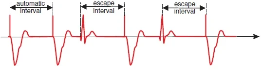
- Khoảng tự động (automatic interval)
- Là khoảng giữa các nhát tạo nhịp thất
- Thường bằng khoảng thoát
- Khoảng thoát
- Là khoảng giữa thời điểm nhận cảm QRS tự nhiên và nhát tạo nhịp thất
Máy tạo nhịp VVI
- Máy tạo nhịp đang ở chế độ VVI
- Khoảng tự động và khoảng thoát
Trễ (Hysteresis)
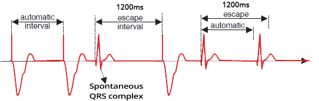
- Trễ (hysteresis) nghĩa là:
- Nhận cảm dương tính làm kéo dài khoảng thoát tiếp theo
- Mục tiêu là duy trì nhịp xoang tự nhiên lâu nhất có thể, bảo tồn đồng bộ nhĩ – thất
Máy tạo nhịp VVI
- Máy tạo nhịp đang ở chế độ VVI
- Máy tạo nhịp có LRL là 1000ms (60/min.)
- Bệnh nhân được tạo nhịp ở tần số 60/min.
- Trễ 1200ms (50/min.)
- Sau một QRS tự nhiên, hiện tượng trễ xảy ra (khoảng thoát là 1200ms)
- Nếu không có QRS tự nhiên nào xuất hiện trong vòng 1200ms, tạo nhịp lại được kích hoạt
- Về sau, trong khoảng thoát của hiện tượng trễ, một nhát bóp xoang xuất hiện
Thời kỳ trơ của máy tạo nhịp (ARP, PVARP, VRP)
- Đây không phải thời kỳ trơ của điện thế hoạt động
- Máy tạo nhịp có thời kỳ trơ riêng được định nghĩa bằng mili giây
- Thời kỳ trơ của máy tạo nhịp
- Là khoảng thời gian sau nhận cảm hoặc tạo nhịp
- Trong đó máy tạo nhịp không đáp ứng bằng tạo nhịp đối với nhận cảm dương tính
- Nếu không có thời kỳ trơ, điện cực nhĩ có thể diễn giải nhầm (QRS, sóng T) thành nhận cảm sóng P
- Máy tạo nhịp có ba thời kỳ trơ được định nghĩa:
- VRP (thời kỳ trơ thất – Ventricular Refractory Period)
- Ngăn nhận cảm sóng T
- ARP (thời kỳ trơ nhĩ – Atrial Refractory Period)
- Dùng trong tạo nhịp nhĩ một buồng
- PVARP (thời kỳ trơ nhĩ sau tạo nhịp thất – Post Ventricular Atrial Refractory Period)
- Dùng trong tạo nhịp hai buồng
- VRP (thời kỳ trơ thất – Ventricular Refractory Period)
VRP (thời kỳ trơ thất – Ventricular Refractory Period)
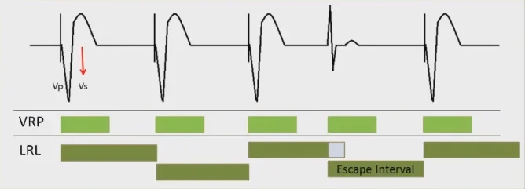
- Là thời kỳ sau nhận cảm thất hoặc tạo nhịp thất
- Máy tạo nhịp bỏ qua nhận cảm trong VRP
- Điều này giúp tránh nhận cảm sóng T
Máy tạo nhịp VVI và VRP (thời kỳ trơ thất)
- Máy tạo nhịp đang ở chế độ VVI
- VRP (thời kỳ trơ thất)
- Là thời kỳ sau nhận cảm thất hoặc tạo nhịp thất
- Máy tạo nhịp bỏ qua nhận cảm trong VRP (Vs - nhận cảm thất)
- Điều này giúp tránh nhận cảm sóng T
- LRL thể hiện bằng các gai tạo nhịp (Vp - tạo nhịp thất)
- QRS thứ 4 là QRS nội tại và xuất hiện sớm hơn so với LRL đã lập trình
ARP (thời kỳ trơ nhĩ – Atrial Refractory Period)
- Là thời kỳ sau nhận cảm nhĩ hoặc tạo nhịp nhĩ
- Máy tạo nhịp nhĩ bỏ qua nhận cảm trong ARP
- Điều này giúp tránh nhận cảm phức bộ QRS và sóng T
Máy tạo nhịp AAI và ARP (thời kỳ trơ nhĩ)
- Máy tạo nhịp đang ở chế độ AAI
- ARP (thời kỳ trơ nhĩ)
- Là thời kỳ sau nhận cảm nhĩ hoặc tạo nhịp nhĩ
- Máy tạo nhịp nhĩ bỏ qua nhận cảm trong ARP
- Điều này giúp tránh nhận cảm phức bộ QRS và sóng T
- LRL thể hiện bằng các gai tạo nhịp
- Sóng P thứ 3 là sóng P nội tại, tiếp sau là một khoảng thoát
Khoảng AV và khoảng VA
- Máy tạo nhịp hai buồng có một chu kỳ được xác định bởi 3 khoảng thời gian:
- LRL (giới hạn tần số dưới – Lower Rate Limit)
- Là khoảng giữa các nhát tạo nhịp thất
- Khoảng AV (độ trễ AV)
- Là khoảng giữa tạo nhịp nhĩ và tạo nhịp thất
- Khoảng VA (thất – nhĩ)
- Là khoảng giữa tạo nhịp thất và tạo nhịp nhĩ
- Đôi khi được gọi là khoảng thoát nhĩ
Máy tạo nhịp DDD (ApVp)
- Máy tạo nhịp hai buồng hoạt động ở chế độ DDD (ApVp)
- Máy thực hiện tạo nhịp nhĩ (Ap) và tạo nhịp thất (Vp)
- LRL (giới hạn tần số dưới)
- Là khoảng giữa các nhát tạo nhịp thất
- Khoảng AV (độ trễ AV)
- Là khoảng giữa tạo nhịp nhĩ và tạo nhịp thất
- Khoảng VA (thất – nhĩ)
- Là khoảng giữa tạo nhịp thất và tạo nhịp nhĩ
- Đôi khi được gọi là khoảng thoát nhĩ
Máy tạo nhịp DDD (AsVs)
- Máy tạo nhịp hai buồng hoạt động ở chế độ DDD (AsVs)
- Hoạt động điện nội tại của tim (P và QRS) ức chế tạo nhịp
- Không thấy gai tạo nhịp trên ECG, cho thấy máy tạo nhịp bị ức chế hoàn toàn
- LRL (giới hạn tần số dưới)
- Là khoảng giữa các nhát tạo nhịp thất
- Tạo nhịp bị ức chế vì QRS nội tại xuất hiện trước khi khoảng LRL kết thúc
- Khoảng AV (độ trễ AV)
- Là khoảng giữa tạo nhịp nhĩ và tạo nhịp thất
- Tạo nhịp bị ức chế vì QRS nội tại xuất hiện trước khi khoảng AV kết thúc
- Khoảng VA (thất – nhĩ)
- Là khoảng giữa tạo nhịp thất và tạo nhịp nhĩ
- Tạo nhịp bị ức chế vì sóng P nội tại xuất hiện trước khi khoảng VA kết thúc
Máy tạo nhịp DDD (ApVs)
- Máy tạo nhịp hai buồng hoạt động ở chế độ DDD (ApVs)
- Một sóng P được tạo nhịp theo sau là một phức bộ QRS nội tại
- LRL (giới hạn tần số dưới)
- Là khoảng giữa các nhát tạo nhịp thất
- Tạo nhịp bị ức chế vì QRS nội tại xuất hiện trước khi khoảng LRL kết thúc
- Khoảng AV (độ trễ AV)
- Là khoảng giữa tạo nhịp nhĩ và tạo nhịp thất
- Tạo nhịp bị ức chế vì QRS nội tại xuất hiện trước khi khoảng AV kết thúc
- Khoảng VA (thất – nhĩ)
- Là khoảng giữa tạo nhịp thất và tạo nhịp nhĩ
- Tạo nhịp nhĩ được kích hoạt vì không có sóng P nội tại nào xuất hiện trong khoảng VA
Máy tạo nhịp DDD (AsVp)
- Máy tạo nhịp hai buồng hoạt động ở chế độ DDD (AsVp)
- Một sóng P nội tại theo sau là một phức bộ QRS được tạo nhịp
- LRL (giới hạn tần số dưới)
- Là khoảng giữa các nhát tạo nhịp thất
- Tạo nhịp bị ức chế vì QRS được tạo nhịp xuất hiện trước khi khoảng LRL kết thúc
- Khoảng AV (độ trễ AV)
- Là khoảng giữa tạo nhịp nhĩ và tạo nhịp thất
- Tạo nhịp thất được kích hoạt vì QRS nội tại không xuất hiện trước khi khoảng AV kết thúc
- Khoảng VA (thất – nhĩ)
- Là khoảng giữa tạo nhịp thất và tạo nhịp nhĩ
- Tạo nhịp nhĩ bị ức chế vì sóng P nội tại xuất hiện trước khi khoảng VA kết thúc
Nhiễu chéo (Cross talk)
- Là tình huống trong đó tạo nhịp từ một điện cực bị điện cực còn lại nhận cảm
- Tạo nhịp nhĩ tạo ra một nhận cảm thất giả
- Hậu quả là tạo nhịp thất bị ức chế
Nhiễu chéo
- Máy tạo nhịp hai buồng hoạt động ở chế độ DDD (ApVs)
- Điện cực nhĩ thực hiện tạo nhịp nhĩ, tạo ra một sóng P
- Điện cực thất nhận cảm nhầm nhát tạo nhịp nhĩ thành phức bộ QRS nội tại
- Hậu quả là tạo nhịp thất bị ức chế
- Không có phức bộ QRS nào, dù được tạo nhịp hay nội tại
- Kết cục là vô tâm thu thất
Thời kỳ mù (Blanking period)
- Là một cơ chế bảo vệ của máy tạo nhịp chống lại nhiễu chéo
- Sau tạo nhịp hoặc nhận cảm luôn có một thời kỳ mù (thời kỳ mù loà) đi kèm
- Trong thời gian này, máy tạo nhịp bị "mù" (bỏ qua mọi hoạt động điện)
Thời kỳ A-blank và V-blank
- Thời kỳ mù nhĩ (A-blank)
- Là thời kỳ mù sau tạo nhịp thất
- Điện cực nhĩ bỏ qua hoạt động điện
- Thời kỳ mù thất (V-blank)
- Là thời kỳ mù sau tạo nhịp nhĩ
- Điện cực thất bỏ qua hoạt động điện
- Các thời kỳ A-blank và V-blank đóng vai trò bảo vệ chống nhiễu chéo
Giới hạn tần số trên (URL)
- Là tần số tối đa mà máy tạo nhịp có thể dẫn truyền sóng P xuống thất (dẫn truyền sóng P – P wave tracking)
- Đôi khi được gọi là tần số dẫn truyền tối đa (Maximum Tracking Rate – MTR)
- URL bảo vệ thất khỏi nhịp nhanh
- Ví dụ, trong rung nhĩ, các xung từ nhĩ có thể được dẫn xuống thất với tần số 350-600/min.
Máy tạo nhịp DDD (ApVp)
- Máy tạo nhịp hai buồng ở chế độ DDD (ApVp)
- URL (giới hạn tần số trên)
- Là tần số tối đa mà máy tạo nhịp có thể dẫn truyền sóng P xuống thất (dẫn truyền sóng P)
- Nếu sóng P có tần số cao hơn URL, đáp ứng tần số trên (upper rate behavior) sẽ được kích hoạt
Tần số cảm biến tối đa (MSR)
- MSR là một thông số của các máy tạo nhịp có điều biến tần số (DDDR, VVIR)
- Các máy này có cảm biến tích hợp phát hiện rung động (từ hô hấp và vận động)
- Dựa trên các rung động đó, máy tạo nhịp điều chỉnh tần số tạo nhịp
- Chúng được nhận biết bằng chữ "R" ở vị trí thứ tư của mã NBG (DDDR, VVIR)
Tần số cảm biến tối đa (MSR)
- Máy tạo nhịp hai buồng ở chế độ DDDR
- Cảm biến phát hiện rung động (từ hô hấp, vận động) và đặt tần số tạo nhịp bằng tần số mà các mũi tên đỏ chỉ ra
- Tần số này được kiểm soát bởi giá trị của khoảng MSR
Thời kỳ trơ nhĩ sau tạo nhịp thất (PVARP)
- PVARP (thời kỳ trơ nhĩ sau tạo nhịp thất – Post Ventricular Atrial Refractory Period)
- Là thời kỳ sau tạo nhịp thất (hoặc nhận cảm thất), trong đó tín hiệu nhĩ không thể khởi phát dẫn truyền nhĩ – thất
- Điều này giúp tránh nhận cảm sóng P ngược dòng hoặc ngoại tâm thu nhĩ
Máy tạo nhịp DDD (ApVp)
- PVARP (thời kỳ trơ nhĩ sau tạo nhịp thất)
- Là thời kỳ sau tạo nhịp thất (hoặc nhận cảm thất), trong đó tín hiệu nhĩ không thể khởi phát dẫn truyền nhĩ – thất
- Điều này giúp tránh nhận cảm sóng P ngược dòng hoặc ngoại tâm thu nhĩ
- VRP (thời kỳ trơ thất)
- Là thời kỳ sau nhận cảm thất (hoặc tạo nhịp thất)
- Máy tạo nhịp bỏ qua nhận cảm trong VRP
- Điều này giúp tránh nhận cảm sóng T
Máy tạo nhịp DDD (ApVp)
- Máy tạo nhịp hai buồng ở chế độ DDD
- Độ trễ AV
- Bắt đầu bằng tạo nhịp nhĩ (hoặc nhận cảm nhĩ)
- Nếu không có sóng P nội tại nào xuất hiện trong thời kỳ này, tạo nhịp thất được kích hoạt ở cuối độ trễ AV
- V-Blanking
- Là thời kỳ mù sau tạo nhịp nhĩ (hoặc nhận cảm nhĩ)
- Điện cực thất bỏ qua hoạt động điện để tránh nhiễu chéo
- A-Blanking
- Là thời kỳ mù sau tạo nhịp thất (hoặc nhận cảm thất)
- Điện cực nhĩ bỏ qua hoạt động điện để tránh nhiễu chéo
- PVARP (thời kỳ trơ nhĩ sau tạo nhịp thất)
- Là thời kỳ sau tạo nhịp thất (hoặc nhận cảm thất), khi tín hiệu nhĩ không thể khởi phát dẫn truyền nhĩ – thất
- Nó ngăn nhận cảm sóng P ngược dòng hoặc ngoại tâm thu nhĩ
- Khoảng VA
- Là khoảng giữa tạo nhịp thất (hoặc nhận cảm thất) và tạo nhịp nhĩ (hoặc nhận cảm nhĩ)
- Nếu không có sóng P nội tại nào xuất hiện trong khoảng VA, tạo nhịp nhĩ được kích hoạt
- VRP (thời kỳ trơ thất)
- Là thời kỳ sau tạo nhịp thất (hoặc nhận cảm thất)
- Máy tạo nhịp bỏ qua nhận cảm trong VRP
- Nó ngăn nhận cảm sóng T
- URL (giới hạn tần số trên)
- Là tần số tối đa mà máy tạo nhịp có thể dẫn truyền sóng P xuống thất (dẫn truyền sóng P)
- Nếu sóng P có tần số cao hơn URL, đáp ứng tần số trên sẽ được kích hoạt
- LRL (giới hạn tần số dưới)
- Là khoảng giữa các nhát tạo nhịp thất (hoặc nhận cảm thất)
- Nếu không có QRS nội tại nào xuất hiện trong LRL, tạo nhịp thất được kích hoạt
Bài 7. Đáp ứng tần số trên của máy tạo nhịp DDD
Đáp ứng tần số trên (upper rate response) của máy tạo nhịp (pacemaker – PCM) DDD
URL (giới hạn tần số trên – Upper rate limit)
- Là tần số tối đa mà máy tạo nhịp có thể dẫn truyền sóng P xuống thất (dẫn truyền sóng P – P wave tracking)
- Đôi khi được gọi là tần số dẫn truyền tối đa (maximum tracking rate – MTR)
- URL bảo vệ thất khỏi nhịp nhanh
- Ví dụ, trong rung nhĩ (atrial fibrillation), các xung động từ nhĩ có thể được dẫn truyền xuống thất với tần số 350-600/min.
Máy tạo nhịp DDD (ApVp)
- Máy tạo nhịp hai buồng có chế độ DDD (ApVp)
- URL (giới hạn tần số trên – Upper rate limit)
- Là tần số tối đa mà máy tạo nhịp có thể dẫn truyền sóng P xuống thất (dẫn truyền sóng P – P wave tracking)
- Nếu sóng P có tần số cao hơn URL, đáp ứng tần số trên (upper rate behavior) được kích hoạt
PVARP (thời kỳ trơ nhĩ sau tạo nhịp thất – Post ventricular atrial refractory period)
- PVARP (thời kỳ trơ nhĩ sau tạo nhịp thất – Post ventricular atrial refractory period)
- Là khoảng thời gian sau tạo nhịp thất (hoặc nhận cảm thất) trong đó tín hiệu nhĩ không thể khởi phát dẫn truyền nhĩ – thất
- Nó ngăn nhận cảm sóng P ngược dòng hoặc ngoại tâm thu nhĩ
Máy tạo nhịp DDD (ApVp)
- Máy tạo nhịp hai buồng có chế độ DDD (ApVp)
- PVARP (thời kỳ trơ nhĩ sau tạo nhịp thất – Post ventricular atrial refractory period)
- Là khoảng thời gian sau tạo nhịp thất (hoặc nhận cảm thất) trong đó tín hiệu nhĩ không thể khởi phát dẫn truyền nhĩ – thất
- Ngăn nhận cảm sóng P ngược dòng hoặc ngoại tâm thu nhĩ
- VRP (thời kỳ trơ thất – Ventricular refractory period)
- Là khoảng thời gian sau nhận cảm thất (hoặc tạo nhịp thất)
- Máy tạo nhịp bỏ qua nhận cảm trong VRP
- Ngăn nhận cảm sóng T
TARP (tổng thời kỳ trơ nhĩ – Total atrial refractory period)
- TARP = khoảng AV + PVARP
- TARP là tổng thời kỳ trơ đối với nhận cảm nhĩ
- Một sóng P xuất hiện trong TARP sẽ không được dẫn truyền xuống thất (không xuất hiện phức bộ QRS)
- TARP quyết định tần số sóng P cao nhất có thể được dẫn truyền xuống thất trước khi xuất hiện block 2:1
Máy tạo nhịp DDD (AsVp)
- Máy tạo nhịp hai buồng có chế độ DDD (AsVp)
- Độ trễ AV (khoảng AV)
- Là khoảng giữa tạo nhịp nhĩ (nhận cảm nhĩ) và tạo nhịp thất (nhận cảm thất)
- PVARP (thời kỳ trơ nhĩ sau tạo nhịp thất – Post ventricular atrial refractory period)
- Là khoảng thời gian sau tạo nhịp thất (nhận cảm thất) trong đó tín hiệu nhĩ không thể khởi phát dẫn truyền nhĩ – thất
- Ngăn nhận cảm sóng P ngược dòng hoặc ngoại tâm thu nhĩ
- TARP (tổng thời kỳ trơ nhĩ – Total atrial refractory period)
- TARP = khoảng AV + PVARP
- Là thời kỳ trơ đối với nhận cảm nhĩ
- Điện cực nhĩ bỏ qua nhận cảm trong TARP
- Sóng P xuất hiện trong TARP sẽ không được dẫn truyền xuống thất
- Xuất hiện block nhĩ – thất 2:1
- Cứ mỗi sóng P thứ hai bị block do thời kỳ TARP
Đáp ứng tần số trên (upper rate behavior)
- Máy tạo nhịp hai buồng có một khoảng URL đã được xác định
- Đây là tần số sóng P tối đa
- Mà máy tạo nhịp dẫn truyền xuống thất
- Đây là tần số sóng P tối đa
- Đáp ứng tần số trên
- Được kích hoạt khi tần số sóng P nội tại vượt quá URL
- Đây là đáp ứng đã được lập trình của máy tạo nhịp
- Không phải là rối loạn chức năng máy tạo nhịp
- Chỉ có thể xảy ra ở chế độ DDD (AsVp) - dẫn truyền sóng P
- Đáp ứng tần số trên có thể biểu hiện theo ba cách
- Block 2:1
- Wenckebach do máy tạo nhịp
- Nhịp nhanh do máy tạo nhịp (PcmT)
Block 2:1 do máy tạo nhịp
Block 2:1 do máy tạo nhịp, máy tạo nhịp DDD (AsVp)
- Máy tạo nhịp hai buồng ở chế độ DDD (AsVp)
- Độ trễ AV (khoảng AV)
- Đây là khoảng giữa tạo nhịp nhĩ (nhận cảm nhĩ) và tạo nhịp thất (nhận cảm thất)
- PVARP (thời kỳ trơ nhĩ sau tạo nhịp thất – Post ventricular atrial refractory period)
- Đây là khoảng thời gian sau tạo nhịp thất (nhận cảm thất) khi tín hiệu nhĩ không thể khởi phát dẫn truyền nhĩ – thất
- Có tác dụng ngăn nhận cảm sóng P ngược dòng hoặc ngoại tâm thu nhĩ
- TARP (tổng thời kỳ trơ nhĩ – Total atrial refractory period)
- TARP = khoảng AV + PVARP
- Đây là thời kỳ trơ của nhận cảm nhĩ
- Điện cực nhĩ bỏ qua nhận cảm trong TARP
- Sóng P xuất hiện trong TARP sẽ không được dẫn truyền xuống thất
- Dẫn đến block nhĩ – thất 2:1
- Cứ mỗi sóng P thứ hai bị block do thời kỳ TARP
- MTR (tần số dẫn truyền tối đa – Maximum tracking rate) = URL (giới hạn tần số trên – Upper rate limit)
- Đây là tần số tối đa mà máy tạo nhịp có thể dẫn truyền sóng P xuống thất
Tần số trước khi xuất hiện block 2:1
- Dựa trên các khoảng thời gian đã được xác định của máy tạo nhịp, có thể tính được
- Tần số ngưỡng trước khi xuất hiện block 2:1
- Ví dụ:
- Khoảng AV: 200ms
- PVARP: 300ms
- TARP: 500ms (khoảng AV + PVARP)
- Tần số: 60,000/500ms = 120/min.
- Nếu tần số sóng P < 120/min. thì dẫn truyền xuống thất là 1:1
- Nếu tần số sóng P > 120/min. thì dẫn truyền xuống thất là 2:1
Máy tạo nhịp DDD
- Máy tạo nhịp hai buồng ở chế độ DDD
- Nút xoang phát xung đều đặn
- Ban đầu, có nhận cảm các sóng P nội tại (S)
- Chúng được dẫn truyền xuống thất qua khoảng AV
- Cứ mỗi sóng P thứ hai rơi vào PVARP (dấu hoa thị) và bị block
- Kết quả là block 2:1 trên ECG
- Ban đầu, có nhận cảm các sóng P nội tại (S)
- Ở cuối đoạn, nút xoang chậm lại và tạo nhịp nhĩ được kích hoạt
- Vì không có sóng P nội tại nào xuất hiện trong khoảng thoát (escape interval)
- Máy tạo nhịp bỏ qua sóng P nằm trong PVARP
- AP là sóng P được kích thích, do đó nó có hình dạng khác với các sóng P nội tại
- Khi tần số nút xoang chậm lại, block 2:1 biến mất
- Vì không có sóng P nội tại nào xuất hiện trong khoảng thoát (escape interval)
Wenckebach do máy tạo nhịp
Wenckebach do máy tạo nhịp (chế độ DDD: AsVp)
- Máy tạo nhịp hai buồng ở chế độ DDD (AsVp)
- Chỉ có thể xảy ra nếu MTR dài hơn khoảng TARP
- Khi tần số sóng P tăng lên
- Sóng P dịch vào khoảng MTR
- Khoảng MTR xác định tần số thất tối đa
- Sóng P dịch vào khoảng MTR
- Nếu có nhận cảm sóng P dương tính trong khoảng MTR
- Thì tạo nhịp thất chỉ xảy ra sau khi kết thúc khoảng MTR
- Chứ không phải sau khi kết thúc khoảng AV (mũi tên đỏ)
- Khoảng AV do đó kéo dài ra (W)
- Giống như block nhĩ – thất độ II (Wenckebach)
- Thì tạo nhịp thất chỉ xảy ra sau khi kết thúc khoảng MTR
Wenckebach do máy tạo nhịp (4:3), chế độ DDD: AsVp
- Máy tạo nhịp hai buồng hoạt động ở chế độ DDD (AsVp)
- Nút xoang (SA node) còn nguyên vẹn
- Nó phát xung động đều đặn (khoảng PP không thay đổi)
- Sóng P thứ nhất
- Được dẫn truyền xuống thất, gây tạo nhịp thất vào cuối khoảng AV
- Sóng P thứ hai
- Rơi vào khoảng MTR
- Khoảng AV kéo dài ra, và tạo nhịp thất xảy ra đúng vào cuối khoảng MTR
- Sóng P thứ ba
- Rơi vào còn sớm hơn nữa trong khoảng MTR
- Khoảng AV kéo dài thêm nữa, và tạo nhịp thất xảy ra đúng vào cuối khoảng MTR
- Sóng P thứ tư
- Rơi vào khoảng TARP (mũi tên đen)
- Sóng P này bị block hoàn toàn
- Sau sóng P bị block, chu kỳ lặp lại
- Khoảng PQ dài dần ra cho đến khi một sóng P bị block
- ECG cho thấy hình ảnh block nhĩ – thất độ II (Wenckebach) với dẫn truyền xuống thất 4:3
- Trong 4 sóng P, tạo ra 3 phức bộ QRS
Wenckebach do máy tạo nhịp (4:3), chế độ DDD: AsVp
- Máy tạo nhịp hai buồng hoạt động ở chế độ DDD (AsVp)
- SAI (khoảng nhĩ tự phát – Spontaneous atrial interval)
- Hoạt động tự phát của nút xoang
- Ngắn hơn URI, nhưng dài hơn TARP
- Khoảng PQ dài dần ra
- Và cứ sóng P thứ 4 bị block, vì nó rơi vào PVARP
- ECG cho thấy hình ảnh block nhĩ – thất độ II (Wenckebach) với dẫn truyền xuống thất 4:3
- Và cứ sóng P thứ 4 bị block, vì nó rơi vào PVARP
- URI (khoảng tần số trên – Upper rate interval) = MTR (tần số dẫn truyền tối đa – Maximum tracking rate)
Tần số nút xoang và máy tạo nhịp DDD
- Khi tần số sóng P nội tại tăng lên
- Đáp ứng của máy tạo nhịp DDD (AsVp) thay đổi dần
- Nếu máy tạo nhịp được lập trình các thông số:
- Khoảng AV: 120ms
- PVARP: 280ms
- MTR: 140/min.
- Ta tính được:
- TARP = 400ms (khoảng AV + PVARP)
- Tần số ngưỡng cho block 2:1 = 150/min. (60,000/400)
Tần số nút xoang và máy tạo nhịp DDD
- Nếu tần số của nút xoang (sóng P) < 140/min.,
- Mỗi sóng P đều được dẫn truyền xuống thất (dẫn truyền xuống thất 1:1)
- Tạo nhịp thất có một tần số tối thiểu được xác định theo LRL (giới hạn tần số dưới – Lower rate limit)
- Nếu không có phức bộ QRS nội tại nào xuất hiện trong khoảng LRL, tạo nhịp thất được kích hoạt
- Tần số sóng P: 140 - 150/min.
- Sóng P rơi vào khoảng MTR
- Khoảng PQ dài dần ra cho đến khi một sóng P bị block (không có QRS theo sau nó)
- Trên ECG, đây là Wenckebach do máy tạo nhịp
- Tần số sóng P > 150/min.
- Cứ mỗi sóng P thứ hai rơi vào khoảng TARP
- Do đó cứ mỗi sóng P thứ hai bị block
- Trên ECG, đây là block 2:1 do máy tạo nhịp
- Cứ mỗi sóng P thứ hai rơi vào khoảng TARP
Bài 8. Nhịp nhanh do máy tạo nhịp
Nhịp nhanh do máy tạo nhịp (pacemaker mediated tachycardia – PMT), nhịp nhanh vòng lặp vô tận (endless loop tachycardia – ELT), nhịp nhanh chuyển động vòng do máy tạo nhịp (Pacemaker Circus movement tachycardia – PcmT)
Máy tạo nhịp hai buồng
- Máy tạo nhịp hai buồng
- Có hai điện cực (electrode) (một ở nhĩ và một ở thất)
- Nhịp nhanh do máy tạo nhịp (PcmT)
- Xảy ra ở máy tạo nhịp hai buồng
- PcmT xảy ra do dẫn truyền ngược dòng qua nút nhĩ thất (AV node)
- Xung động từ tạo nhịp thất (ventricular pacing)
- Đi ngược dòng lên nhĩ
- Và gây ra nhận cảm dương tính ở nhĩ
- Nhận cảm nhĩ khởi kích tạo nhịp thất
- Điều này tạo ra một vòng vào lại lớn (macro re-entry circuit)
- Giữa nhĩ và thất
- Tương tự AVRT ngược chiều (antidromic)
- Điều này tạo ra một vòng vào lại lớn (macro re-entry circuit)
- Xung động từ tạo nhịp thất (ventricular pacing)
- Yếu tố khởi phát thường gặp nhất của PcmT là
- Ngoại tâm thu thất (ventricular extrasystole)
Cơ chế của nhịp nhanh do máy tạo nhịp
- PcmT được khởi phát bởi một ngoại tâm thu thất (VES) ngẫu nhiên xảy ra vào thời điểm
- Khi nút nhĩ thất không ở trong thời kỳ trơ
(refractory period)- Xung động từ VES đi ngược dòng lên nhĩ
- Sau VES, xung động bắt đầu quay vòng trong một vòng vào lại lớn
- Tương tự AVRT ngược chiều
- Khi nút nhĩ thất không ở trong thời kỳ trơ
- Sự quay vòng của xung động trong PcmT:
- Điện cực nhĩ
- Nhận cảm sóng P ngược dòng (ngôi sao đỏ)
- Máy tạo nhịp làm trễ xung động (độ trễ AV)
- Điện cực thất
- Phát ra tạo nhịp thất (ngôi sao đỏ)
- Xung động thất đi ngược dòng lên nhĩ
- Dẫn truyền VA (dẫn truyền thất – nhĩ)
- Xung động hoạt hoá nhĩ theo chiều ngược dòng
(sóng P ngược dòng) - Sóng P ngược dòng lại được điện cực nhĩ nhận cảm
- Chu trình này lặp lại vô tận
- Điện cực nhĩ
Cắt cơn nhịp nhanh do máy tạo nhịp
- Nhịp nhanh do máy tạo nhịp có thể được cắt bằng:
- Làm chậm dẫn truyền ngược dòng qua nút nhĩ thất
- Bằng cách dùng adenosin (adenosin làm chậm dẫn truyền qua nút nhĩ thất)
- Đặt một nam châm lên thành ngực phía trên máy tạo nhịp
- Nam châm đặt trên máy tạo nhịp làm tắt chức năng nhận cảm
- Nhiều máy tạo nhịp tự động kéo dài PVARP trong cơn PcmT
- Điều này cắt được PcmT vì PVARP kéo dài bỏ qua việc nhận cảm sóng P ngược dòng
- Làm chậm dẫn truyền ngược dòng qua nút nhĩ thất
- Để dự phòng nhịp nhanh do máy tạo nhịp:
- Khoảng PVARP (thời kỳ trơ nhĩ sau tạo nhịp thất – Post-ventricular atrial refractory period)
- Trong khoảng PVARP, máy tạo nhịp bỏ qua việc nhận cảm sóng P ngược dòng
- Khoảng URL (giới hạn tần số trên – Upper rate limit)
- Là tần số tối đa mà máy tạo nhịp có thể dẫn truyền sóng P xuống thất
- Khoảng URL quyết định tần số tối đa của nhịp nhanh do máy tạo nhịp
- Khoảng PVARP (thời kỳ trơ nhĩ sau tạo nhịp thất – Post-ventricular atrial refractory period)
Nhịp nhanh do máy tạo nhịp
- Máy tạo nhịp hai buồng được cài chế độ DDD (AsVp)
- Sau tạo nhịp thất (Vp)
- Tiếp theo có hoạt hoá nhĩ theo chiều ngược dòng (sóng P ngược dòng)
- Sóng P ngược dòng xuất hiện sau khoảng PVARP
- Do đó, máy tạo nhịp nhận cảm được nó (As) và dẫn truyền nó xuống thất (Vp)
- Không thấy được sóng P ngược dòng trên ECG
- Nhịp nhanh do máy tạo nhịp được khởi phát bởi một ngoại tâm thu thất (không ghi được trên ECG)
Nhịp nhanh do máy tạo nhịp
- Máy tạo nhịp hai buồng được cài chế độ DDD (AsVp)
- Tần số tim 120/min.
- Các gai tạo nhịp (pacing artifact) chỉ có trước các phức bộ QRS
- Sóng P ngược dòng xuất hiện ngoài khoảng PVARP
- Việc nhận cảm sóng P ngược dòng khởi kích tạo nhịp thất
- Không thấy được sóng P ngược dòng trên ECG
- Cơn nhịp nhanh đã được cắt bằng nam châm
- Nam châm đặt trên máy tạo nhịp làm tắt chức năng nhận cảm
- Bệnh nhân không được cấy máy tạo nhịp có điều biến tần số (DDDR)
- Máy tạo nhịp DDD không điều chỉnh tần số tạo nhịp theo nhu cầu (stress, gắng sức thể lực)
- Và tần số 120/min không phải là sinh lý
Bài 9. Đồng bộ thất – nhĩ lặp lại không vào lại (RNRVAS)
Đồng bộ thất – nhĩ lặp lại không vào lại (RNRVAS)
Máy tạo nhịp hai buồng
- Máy tạo nhịp hai buồng
- Có hai điện cực (electrode) (ở nhĩ và ở thất)
- Đồng bộ thất – nhĩ lặp lại không vào lại (RNRVAS)
- Có thể xảy ra ở máy tạo nhịp hai buồng (DDD, DDDR)
- Tạo nhịp thất gây dẫn truyền ngược dòng qua nút nhĩ thất (AV node)
- Sóng P ngược dòng xuất hiện trong khoảng PVARP (thời kỳ trơ nhĩ sau tạo nhịp thất – Post ventricular atrial refractory period)
- Do đó, máy tạo nhịp bỏ qua nó
- Các sóng P ngược dòng tiếp theo bị bỏ qua do
- Thời kỳ trơ của cơ nhĩ (MyoRP)
- Nếu sóng P ngược dòng xuất hiện sau khoảng PVARP
- Nó dẫn đến nhịp nhanh do máy tạo nhịp (PcmT)
Đồng bộ thất – nhĩ lặp lại không vào lại (RNRVAS)
- VAC (dẫn truyền thất – nhĩ – VA Conduction)
- Đây là thời gian dẫn truyền ngược dòng qua nút nhĩ thất (350ms)
- KES (ngoại tâm thu thất)
- Khử cực các thất (QRS) và xung truyền ngược dòng qua nút nhĩ thất lên nhĩ
- Một sóng P ngược dòng được tạo ra nhưng nằm trong khoảng PVARP (400ms)
- Trong khoảng PVARP, máy tạo nhịp bỏ qua sóng P ngược dòng
- AEI (khoảng thoát nhĩ – Atrial escape interval)
- Đây là khoảng giữa tạo nhịp thất và tạo nhịp nhĩ (525ms)
- Nếu trong vòng 525ms sau tạo nhịp (nhận cảm) thất không có sóng P tự phát nào xuất hiện
- Thì máy tạo nhịp kích hoạt tạo nhịp nhĩ (Ap)
- Tuy nhiên, Ap xảy ra trong thời kỳ trơ của cơ nhĩ (MyoRP)
- Do đó, sóng P do máy tạo nhịp phát ra (Ap) bị block
- Tuy nhiên, máy tạo nhịp đếm khoảng AV (225ms) từ sóng P bị block (Ap)
- Sau đó nó khởi phát tạo nhịp thất
- Chu kỳ sau đó lặp lại
- Đồng bộ thất – nhĩ lặp lại không vào lại thường bị khởi phát nhất bởi
- Ngoại tâm thu thất (KES)
Đồng bộ thất – nhĩ lặp lại không vào lại (khởi phát)
- Bệnh nhân có máy tạo nhịp DDD
- Hai nhát đầu tiên có tạo nhịp hiệu quả ở nhĩ và thất (ApVp)
- Nhát thứ ba là tạo nhịp thất an toàn (VSP)
- Máy tạo nhịp đáp ứng với một ngoại tâm thu thất bằng VSP
- Đây là cơ chế bảo vệ của máy tạo nhịp chống lại nhiễu chéo (cross-talk)
- Máy tạo nhịp đáp ứng với một ngoại tâm thu thất bằng VSP
- Nhát thứ tư là một ngoại tâm thu thất (KES) có dẫn truyền ngược dòng (VA)
- Sóng P ngược dòng không nhìn thấy được
- Tiếp theo là tạo nhịp nhĩ không hiệu quả
- Không có sóng P nào theo sau
- Vì tạo nhịp nhĩ xảy ra trong thời kỳ trơ của cơ nhĩ (MyoRP)
- Sau tạo nhịp nhĩ không hiệu quả
- Có tạo nhịp thất hiệu quả
Đồng bộ thất – nhĩ lặp lại không vào lại (chấm dứt)
- Bệnh nhân có máy tạo nhịp DDD
- Nhát thứ tư là một ngoại tâm thu thất (KES)
- Có dẫn truyền ngược dòng
- Nhát thứ năm là một ngoại tâm thu thất
- Có block dẫn truyền ngược dòng thất – nhĩ (VA)
- Tiếp theo là tạo nhịp nhĩ hiệu quả (Ap) vì Ap xảy ra:
- Ngoài PVARP
- Ngoài thời kỳ trơ của cơ nhĩ
Bài 10. Định khu vị trí tạo nhịp thất trên ECG
Các hình ảnh khử cực trên ECG trong tạo nhịp thất
Điện cực thất
- Trong tạo nhịp thất (ventricular pacing), điện cực thất (electrode) có thể được đặt ở:
- Mỏm thất phải (thường gặp nhất)
- Đường ra thất phải
Định khu vị trí điện cực trong thất phải
- Vị trí điện cực trong thất phải
- Được xác định bởi hình dạng của các phức bộ QRS
- Trong khi tạo nhịp thất
- ECG có thể phân biệt điện cực nằm ở hai vị trí:
- Mỏm thất phải
- Đường ra thất phải
- Vách thấp (SS)
- Vách cao (HS)
- Thành trên đường ra (HsVT)
- Thành dưới đường ra (SsVT)
ECG và tạo nhịp từ mỏm thất phải
- Chuyển đạo chi:
- Trục điện tim xoay về
- Góc phần tư trên trái
- QRS âm (II, III, aVF)
- QRS chủ yếu dương (I)
- Góc phần tư trên phải
- QRS âm (II, III, aVF)
- QRS chủ yếu âm (I)
- Góc phần tư trên trái
- Trục điện tim xoay về
- Chuyển đạo trước tim
- Cho hình ảnh block nhánh trái (left bundle branch block)
- QRS ưu thế (V6) và QRS âm (V1)
- Hiếm khi có dạng QS (V1-V6)
- Cho hình ảnh block nhánh trái (left bundle branch block)
Tạo nhịp thất từ mỏm thất phải
- Trục lệch về góc phần tư trên trái
- QRS âm (II, III, aVF)
- QRS chủ yếu dương (I)
- Chuyển đạo trước tim (V1-V6)
- Thường gặp nhất là cho hình ảnh block nhánh trái (LBBB)
- QRS ưu thế (V6) và QRS âm (V1)
- Hiếm khi có dạng QS (V1-V6)
- Thường gặp nhất là cho hình ảnh block nhánh trái (LBBB)
ECG và tạo nhịp từ đường ra thất phải
- Chuyển đạo chi
- Trục điện tim bình thường xoay về:
- Góc phần tư dưới trái
- QRS dương (II, III, aVF)
- QRS cao nhất (II)
- Góc phần tư dưới trái
- Trục điện tim bình thường xoay về:
- Chuyển đạo trước tim
- Cho hình ảnh block nhánh trái
- QRS ưu thế (V6) và QRS âm (V1)
- Hiếm khi có dạng QS (V1-V6)
- Cho hình ảnh block nhánh trái
- Điện cực có thể nằm ở 4 phần của đường ra thất phải (RV)
- Không thể định khu được là phần nào dựa trên ECG:
- Vách thấp (LS)
- Vách cao (US)
- Thành trên đường ra (UOT)
- Thành dưới đường ra (LOT)
- Không thể định khu được là phần nào dựa trên ECG:
Tạo nhịp thất từ đường ra thất phải
- Trục điện tim bình thường
- QRS dương (II, III, aVF)
- QRS cao nhất (II)
- Chuyển đạo trước tim (V1-V6)
- Thường gặp nhất là cho hình ảnh block nhánh trái (LBBB)
- QRS ưu thế (V6) và QRS âm (V1)
- Hiếm khi có dạng QS (V1-V6)
- Thường gặp nhất là cho hình ảnh block nhánh trái (LBBB)
CRT (liệu pháp tái đồng bộ tim – Cardiac Resynchronization Therapy)
- CRT là một thiết bị dùng cho liệu pháp tái đồng bộ tim
- Nó được dùng cho co bóp thất mất đồng bộ
- Ví dụ, trong block nhánh trái
- Khi thất phải co bóp sớm hơn thất trái
- Ví dụ, trong block nhánh trái
- CRT có 3 điện cực:
- Nhĩ phải
- Điện cực nhĩ thực hiện nhận cảm (sensing)
- Thất phải (mỏm)
- Thất trái (đưa vào qua xoang vành)
- Các điện cực thất thực hiện tạo nhịp hai thất đồng bộ
- Nhĩ phải
ECG và tạo nhịp từ thất trái
- Đôi khi chỉ tạo nhịp từ thất trái được sử dụng
- Như một cách tái đồng bộ trong block nhánh trái
- ECG và tạo nhịp từ thất trái:
- Chuyển đạo trước tim
- Cho hình ảnh block nhánh phải (right bundle branch block)
- QRS ưu thế (V1)
- Cho hình ảnh block nhánh phải (right bundle branch block)
- Chuyển đạo chi:
- Trục lệch phải
- QRS âm (aVL)
- Biên độ QRS ở III > aVF
- Trục lệch phải
- Chuyển đạo trước tim
Tạo nhịp thất từ thất trái
- Chuyển đạo trước tim
- Cho hình ảnh block nhánh phải
- QRS ưu thế (V1)
- Cho hình ảnh block nhánh phải
- Chuyển đạo chi:
- Trục lệch phải
- QRS âm (aVL)
- Biên độ QRS ở III > aVF
- Trục lệch phải
ECG và tạo nhịp hai thất
- Trong tạo nhịp hai thất, các thất được kích thích từ 2 vị trí:
- Mỏm thất phải
- Xoang vành của thất trái
- ECG và tạo nhịp hai thất:
- Chuyển đạo trước tim
- Cho hình ảnh block nhánh phải
- QRS ưu thế (V1)
- Cho hình ảnh block nhánh phải
- Chuyển đạo chi:
- Trục lệch về:
- Góc phần tư trên phải
- QRS âm (II, III, aVF)
- QRS chủ yếu âm (I)
- Góc phần tư trên trái
- QRS âm (II, III, aVF)
- QRS chủ yếu dương (I)
- Trục lệch về:
- Chuyển đạo trước tim
Tạo nhịp hai thất
- Chuyển đạo trước tim
- Cho hình ảnh block nhánh phải
- QRS ưu thế (V1)
- Sóng S sâu (V6)
- Cho hình ảnh block nhánh phải
- Trục lệch phải cực độ
- QRS âm (II, III, aVF)
- QRS chủ yếu dương (aVR)
- Các phức bộ QRS tương đối hẹp
- Vì các thất được kích thích đồng thời từ 2 vị trí:
- Mỏm thất phải
- Xoang vành của thất trái
- Nếu chỉ tạo nhịp từ thất phải hoặc thất trái, chúng sẽ rộng hơn
- Vì hoạt hoá thất sẽ mất nhiều thời gian hơn
- Vì các thất được kích thích đồng thời từ 2 vị trí:
Bài 11. Điện thế cơ và máy tạo nhịp
Nhiễu điện thế cơ và máy tạo nhịp
Nhận cảm (Sensing)
- Nhận cảm (sensing) là khả năng của máy tạo nhịp (pacemaker – PCM) phát hiện các xung điện nội tại của tim (sóng P, phức bộ QRS) thông qua điện cực (electrode).
- Các xung từ buồng tim là thông tin đầu vào cho máy tạo nhịp, sau đó máy
- Đánh giá sự hiện diện của chúng (cũng như tần số và tính đều đặn)
- Dựa trên nhận cảm, máy tạo nhịp khởi phát tạo nhịp (pacing).
Nhận cảm quá mức (Oversensing)
- Là việc nhận cảm các xung điện không mong muốn
- Máy tạo nhịp phát hiện nhầm các hoạt động điện khác (nằm ngoài các thông số đã được xác định của máy)
- Ví dụ, máy tạo nhịp lẽ ra chỉ phát hiện các phức bộ QRS của tim nhưng lại phát hiện nhầm cả sóng P
Máy tạo nhịp VVI
- Nhận cảm được cài ở 1.5mV
- Cả phức bộ QRS lẫn sóng P đều vượt quá ngưỡng nhạy
- Nhận cảm dương tính hai lần (đây là một sai sót)
- Bởi vì máy tạo nhịp VVI lẽ ra chỉ nhận cảm thất (QRS)
Điện thế cơ của cơ vân
- Các điện cực của máy tạo nhịp
- Phát hiện hoạt động điện (điện thế hoạt động)
- Từ tim, nhưng cũng từ cơ vân
- Cơ vân sinh ra hoạt động điện khi vận động
- Nhận cảm quá mức do cơ xương
- Cơ sinh ra một xung điện
- Xung này vượt quá ngưỡng nhạy của máy tạo nhịp
- Dẫn đến nhận cảm quá mức do cơ xương
- Các cơ delta – ngực
- Có thể gây nhận cảm quá mức ở máy tạo nhịp đơn cực
- Cơ hoành
- Có thể gây nhận cảm quá mức ở máy tạo nhịp lưỡng cực
ECG và nhận cảm quá mức do cơ xương
- Hoạt động điện của cơ trong lúc vận động
- Tạo ra nhiễu do cơ xương đặc trưng trên ECG
Nhận cảm quá mức do cơ xương và máy tạo nhịp VVI
- Bệnh nhân được cấy máy tạo nhịp VVI
- Các phức bộ QRS nội tại (nhận cảm dương tính) ức chế tạo nhịp
- Máy tạo nhịp được cài để tạo nhịp với tần số 70/min.
- Các gai tạo nhịp (pacing artifact) có tần số 70/min.
- Ở giữa bản ghi ECG, thấy hoạt động điện của các cơ
- Máy tạo nhịp đã nhận cảm nhầm nó (nhận cảm quá mức) là QRS nội tại
- Nhận cảm dương tính, do đó tắt tạo nhịp thất
- Máy tạo nhịp đã nhận cảm nhầm nó (nhận cảm quá mức) là QRS nội tại
- Trong lúc cơ hoạt động
- Không có gai tạo nhịp (và do đó không có QRS)
- Máy tạo nhịp "nghĩ" rằng tim đang tự phát ra các phức bộ QRS của chính nó
Bài 12. Tăng kali máu và máy tạo nhịp
Tăng kali máu (hyperkalemia) và máy tạo nhịp (pacemaker – PCM)
ECG và tăng kali máu
- Tăng kali máu kéo dài dẫn truyền xung động ở thất
- Làm rộng phức bộ QRS và sóng P
- Khi tăng kali máu ngày càng nặng,
lần lượt xuất hiện:- Sóng T nhọn đặc biệt ở các chuyển đạo trước tim
- Thường cao hơn sóng R
- (giống tháp Eiffel)
- Phức bộ QRS rộng
- Dần tạo thành dạng hình sin
- Sóng T nhọn đặc biệt ở các chuyển đạo trước tim
- Khi tăng kali máu > 9 mmol/l, có nguy cơ:
- Rung thất
- Vô tâm thu
- Đường cong ECG không phải lúc nào cũng tương quan chính xác với nồng độ kali
Tăng kali máu (9 mmol/l)
- Sóng T cao nhọn
- Giống tháp Eiffel
- Luôn nghi ngờ tăng kali máu nếu sóng T cao hơn sóng R (ở hầu hết mọi chuyển đạo)
- Phức bộ QRS rộng (khoảng 0.24s)
- Giống dạng hình sin (khó phân biệt sóng T với phức bộ QRS)
- Sóng P không thể phân biệt được
- Bệnh nhân bị tăng kali máu do tiêu cơ vân sau gắng sức thể lực nặng
Tăng kali máu và máy tạo nhịp
- Tăng kali máu làm giảm đáp ứng của cơ tim với tạo nhịp (pacing)
- Ban đầu, nhĩ ngừng đáp ứng, sau đó đến thất
- Sau kích thích, không có sóng P (phức bộ QRS)
- Block lối ra máy tạo nhịp độ I (pacemaker exit block I degree)
- Tăng kali máu kéo dài thời gian tiềm (latency) của máy tạo nhịp
- Có dẫn truyền chậm xung động từ điện cực qua cơ tim
- Block lối ra máy tạo nhịp độ I
- Có khoảng thời gian kéo dài từ lúc kích thích đến khi bắt đầu khử cực
- Tăng kali máu kéo dài thời gian tiềm (latency) của máy tạo nhịp
Máy tạo nhịp DDD và tăng kali máu (7.2 mmol/l)
- Bệnh nhân được cấy máy tạo nhịp DDD
- Có thể thấy kích thích nhĩ và thất (ApVp)
- Sau tạo nhịp nhĩ, không có sóng P
- Nhĩ không đáp ứng với máy tạo nhịp
- Tạo nhịp thất chỉ có hiệu quả từng lúc
- Chỉ mỗi nhát tạo nhịp thất thứ 3 tạo ra một phức bộ QRS
- Block lối ra máy tạo nhịp độ 1
- Có khoảng thời gian kéo dài từ lúc kích thích đến khi bắt đầu khử cực (QRS)
Bài 13. Nhát bóp hoà nhập và giả hoà nhập trong tạo nhịp
Nhát bóp hoà nhập thất và nhát bóp giả hoà nhập thất trong hoạt động của máy tạo nhịp
Ngoại tâm thu thất và phức bộ QRS nội tại
- Ngoại tâm thu thất (ventricular extrasystole) và phức bộ QRS nội tại
- Chúng có hình dạng khác nhau trong quá trình tạo nhịp (pacing)
- Máy tạo nhịp (pacemaker – PCM) VVI có một điện cực (electrode) trong thất phải
- V - tạo nhịp thất
- V - nhận cảm thất
- I - nhận cảm dương tính ức chế tạo nhịp
- Máy tạo nhịp nhận cảm hoạt động điện của chính buồng tim đó
- Hoạt động điện nội tại "tắt" tạo nhịp
Máy tạo nhịp VVI
- Máy tạo nhịp một buồng ở chế độ VVI
- Các phức bộ QRS được kích thích (2,3,6,7)
- Trước mỗi QRS đều có một gai tạo nhịp (pacing artifact — vạch thẳng đứng)
- Máy tạo nhịp có một khoảng thoát (escape interval) đã được định sẵn (ví dụ 1000ms)
- Nếu trong vòng 1000ms kể từ QRS trước đó không có QRS nội tại nào xuất hiện, tạo nhịp thất được kích hoạt
- Khoảng thoát đôi khi được gọi là LRL (giới hạn tần số dưới – Lower rate limit)
- Phức bộ QRS nội tại (1,5)
- Xuất hiện trước mốc 1000ms kể từ QRS trước đó, do đó ức chế tạo nhịp (không có gai tạo nhịp)
- Ngoại tâm thu thất (4)
- Xuất hiện trước mốc 1000ms kể từ QRS trước đó, do đó ức chế tạo nhịp (không có gai tạo nhịp)
- Mỗi phức bộ QRS (được kích thích, nội tại, ngoại tâm thu) đều có hình dạng khác nhau
- Vì các thất được khử cực từ các ổ khác nhau
Nhát bóp hoà nhập trong tạo nhịp
- Nhát bóp hoà nhập (fusion beat)
- Xảy ra khi các thất được hoạt hoá đồng thời bởi 2 xung
- Một xung đến từ điện cực máy tạo nhịp
- Xung còn lại là xung tự nhiên
- Sóng T sau một nhát bóp hoà nhập
- Khác với sóng T sau một phức bộ QRS tự nhiên
- Xảy ra khi các thất được hoạt hoá đồng thời bởi 2 xung
- Nhát bóp hoà nhập (khi không có máy tạo nhịp) là một dấu hiệu của nhịp nhanh thất
- Một xung có nguồn gốc trên thất
- Xung còn lại đến từ một ổ ngoại vị trong thất

Máy tạo nhịp VVI
- Máy tạo nhịp một buồng ở chế độ VVI
- 3 phức bộ QRS cuối là các phức bộ QRS được tạo nhịp
- Sau gai tạo nhịp là một phức bộ QRS
- Nhát bóp hoà nhập - F
- Chúng thường hẹp hơn phức bộ QRS được tạo nhịp thông thường
- Vì các thất khử cực từ 2 ổ nên nhanh hơn
- Chúng có hình dạng thay đổi
- Chúng luôn khác với
- Các phức bộ QRS được tạo nhịp thông thường
- Các phức bộ QRS tự nhiên không có tạo nhịp
- Chúng luôn khác với
- Chúng thường hẹp hơn phức bộ QRS được tạo nhịp thông thường
- 4 QRS đầu tiên (dấu sao) là các nhát bóp giả hoà nhập
Nhát bóp giả hoà nhập trong tạo nhịp
- Nhát bóp giả hoà nhập (pseudofusion beat)
- Đây là một phức bộ QRS tự nhiên
- Bị một gai tạo nhịp chồng lên
- Gai tạo nhịp rơi vào pha trơ (refractory phase) của các thất
- Do đó, các thất bỏ qua kích thích tạo nhịp
- Sóng T sau một nhát bóp giả hoà nhập
- Giống hệt sóng T sau một phức bộ QRS tự nhiên
- Đây là một phức bộ QRS tự nhiên
- Thời điểm xuất hiện của nhát bóp giả hoà nhập:
- Gai tạo nhịp xuất hiện ở cuối khoảng LRL
- Nhưng ngay trước mốc LRL, một QRS tự nhiên bắt đầu hình thành
- Dây điện cực thất (lead) nhận cảm được QRS tự nhiên (nhận cảm dương tính)
- Quá muộn (vì tạo nhịp thất đã xảy ra rồi)
- Gai tạo nhịp xuất hiện ở cuối khoảng LRL
Máy tạo nhịp VVI
- Máy tạo nhịp một buồng ở chế độ VVI
- 4 QRS đầu tiên là các nhát bóp giả hoà nhập
- Các phức bộ QRS tự nhiên bị gai tạo nhịp chồng lên
- Gai xuất hiện ngay sau khi thất được hoạt hoá tự nhiên, do đó không làm thay đổi hình dạng của QRS
- Tuy nhiên trên ECG lại không ghi được phức bộ QRS tự nhiên khi không có gai tạo nhịp
- 3 QRS cuối là các phức bộ QRS được tạo nhịp
- Mỗi phức bộ QRS đều đi sau một gai tạo nhịp
- Nhát bóp hoà nhập - F
- Điển hình, chúng hẹp hơn phức bộ QRS được tạo nhịp thông thường
- Vì các thất được khử cực nhanh hơn từ 2 ổ
- Chúng có hình dạng thay đổi
- Luôn khác với
- Các phức bộ QRS được tạo nhịp thông thường
- Các phức bộ QRS tự nhiên không có tạo nhịp
- Luôn khác với
- Điển hình, chúng hẹp hơn phức bộ QRS được tạo nhịp thông thường
Nguồn tài liệu (Sources)
Nguồn: ECG BOOK — www.ecgbook.com
- ECG from Basics to Essentials Step by Step
- Litfl.com
- Ecgwaves.com
- Metealpaslan.com
- Medmastery.com
- Uptodate.com
- Ecgpedia.org
- Wikipedia.org
- Strong Medicine
- Understanding Pacemakers
Bản dịch được thực hiện từ 13 trang sau của ECG BOOK (www.ecgbook.com):
- Bài 1 — Cardiac Pacemaker and Electrophysiology
- Bài 2 — Pacemaker (PCM), ICD, CRT
- Bài 3 — Pacemaker Stimulation Modes (NBG Codes)
- Bài 4 — Single Chamber Pacemaker Modes
- Bài 5 — Dual Chamber Pacemaker Modes
- Bài 6 — Pacemaker Intervals, Sensing, and Pacing
- Bài 7 — Upper Rate Behavior of DDD Pacemaker
- Bài 8 — Pacemaker Mediated Tachycardia
- Bài 9 — Repetitive Nonreentrant Ventriculoatrial synchrony (RNRVAS)
- Bài 10 — ECG Localization of Ventricular Pacing
- Bài 11 — Myopotentials of Muscle and Pacemaker
- Bài 12 — Hyperkalemia and Pacemaker
- Bài 13 — Fusion and Pseudofusion Beats during Pacing